🌐 跨平台综合分析 · VOL.004
本期情报总览
汇总 5 大平台、50 条精选内容的研究结论,提炼多平台交叉印证较有代表性的信号,梳理本期值得优先关注的研发参考方向。
📅 数据周期 2026.04.16 – 04.23
🌎 覆盖平台 热搜 / TikTok / YouTube / Memes / 广告
📊 内容条目 50 条精选
🎮 分析视角 角色 / 玩法 / 广告三维度
本期值得重点关注的 3 个跨源观察
三来源印证 · 重点参考
1
★★★ 三来源印证
「成年人 × AI/年幼伙伴」搭档原型在本周三大平台同步爆发,情感穿透力明显高于独立 hero,是值得关注的角色组合方向。
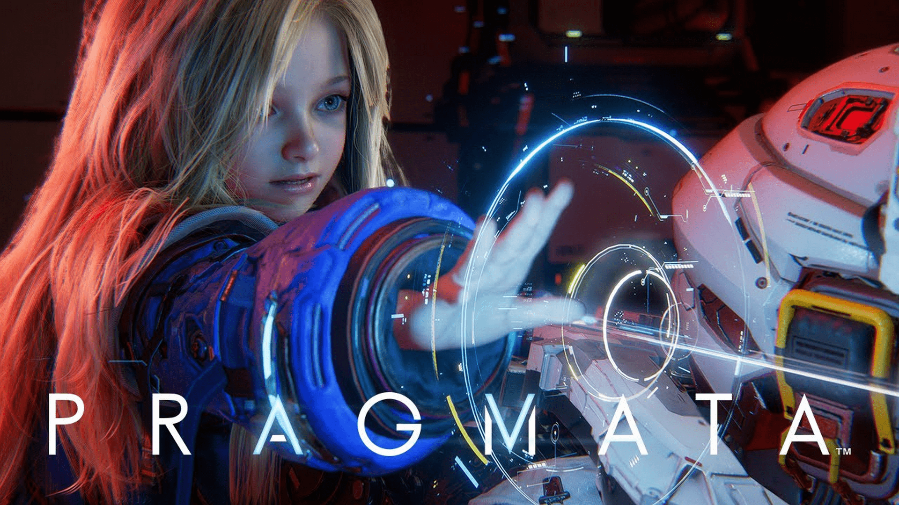
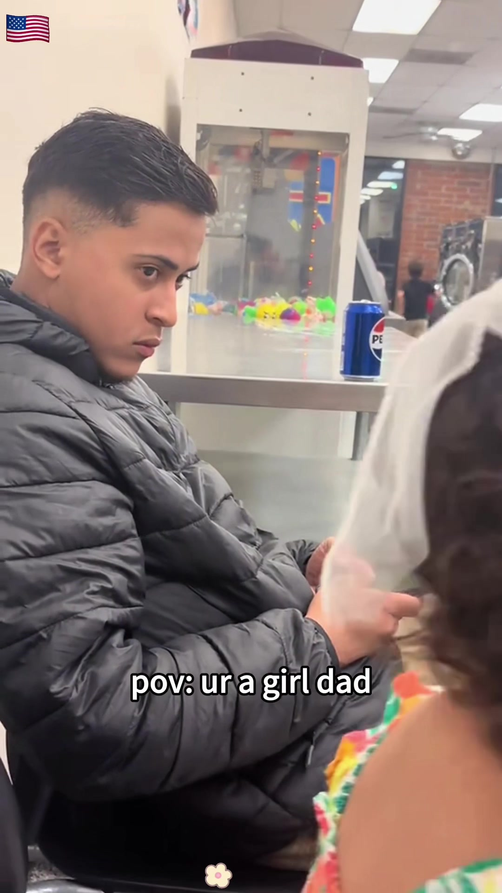
📌 跨源证据
热搜
Pragmata「孤独工程师 + AI 少女」(Capcom 新 IP) 2M+ 搜索, 验证「成年人 + AI 孩童」是欧美最具情感穿透力的搭档原型
YouTube
Goofy Recaps「Speed Made His Day」偶遇粉丝拥抱 41.9M 播放 / 互动 127M(全 YouTube 第一), 暖心守护的真实瞬间在数据上明显优于精心设计的剧本
TikTok
父亲看见女儿和小男孩的反应 10.7M 播放, "保护型反差"是本期角色维度较为突出的信号点
可联想的方向
这个搭档原型对 AI 角色快验链路是个不错的起点 —— 同样的"成年人 + 年幼/AI 伙伴"骨架, 可以衍生出不同人设/职业/世界观的多种变体。如果延伸到"英雄变体收集"维度, 黑化或反派版本通常是收集欲较突出的子类, 也比较适合 AI 出图快速验证。
2
★★★ 三来源印证
「30 秒可见数字增长」循环在当前美区休闲赛道表现突出,可作为较具代表性的节奏参考,模拟经营类辅助玩法在设计留存钩子时不妨借鉴。
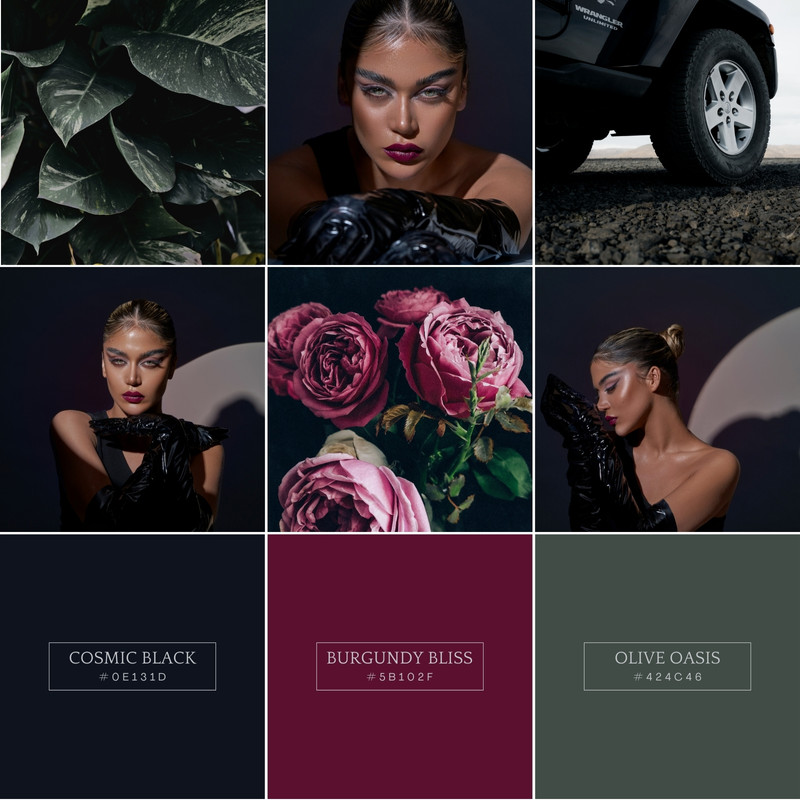
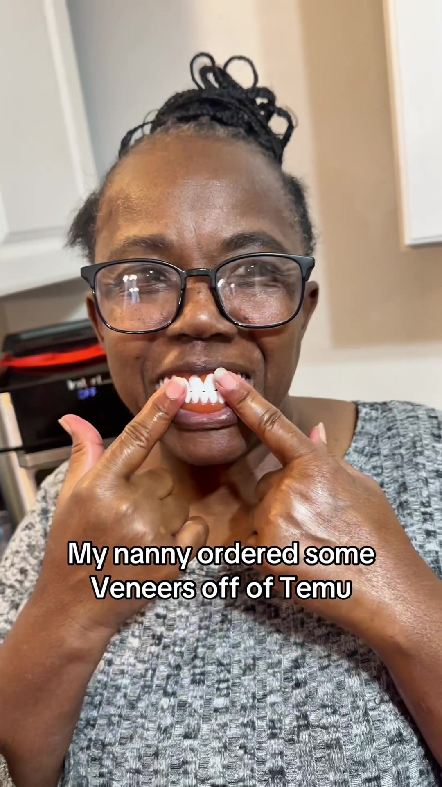
📌 跨源证据
广告
My Cooking Idle 30s 跑完整个升级循环(产出 → 收钱 → 升级 → 解锁)人气 1760; Cash Merge / Nut Sort / Arrow Rush / 3D Bolt 四条「假装失败 → 突然神操作」反差钩子均在 22-45s + 全部 Top1%
热搜
Color Hunting「每日寻找一种颜色」UGC 收集 2M+ 搜索, 单次 1 分钟即可参与, 持续累积 = 完整色彩日记
TikTok
Sweet kitty「Temu Failed」 9.7M 播放, 验证"失败即内容"——奖励反馈不必非得是好结果
可联想的方向
「离线产出 + 升级解锁 + 即时反馈」是欧美休闲爆款较有代表性的骨架, 30 秒爽点循环可作为奖励反馈窗口的参考标尺。再延伸一层, 「同源阵营内战」类型的叙事框架(比如同帝国分裂的两个王子争位) 在本期赛季题材中叙事密度较为突出, 也值得纳入选题池。
⚠ 反向参考:Memes M#1「Don't give me hope」(68.8K 赞) 反映出玩家对「显示稀有奖励但实际不掉落」类假希望机制的敏感, 此类设计若不慎触发会容易引起信任反弹。
3
★★★ 三来源印证
「反差 / 反转钩子」在本期跨平台复用率较高,值得关注;「反派觉醒 + 怀旧 BGM」60 秒 MV 形式可作为 BOSS trailer 的成熟参考模板。
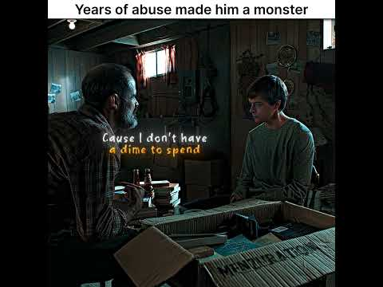
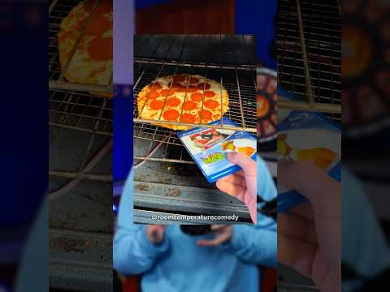
📌 跨源证据
广告
4 条 Top1% 广告(Cash Merge / Nut Sort / Arrow Rush / 3D Bolt) 全部前 3s 故意展示糟糕局面诱导"我能做得更好",再突然神操作翻盘
YouTube
Mappelz「Bro Is A Lost Cause 💀」 32.7M、「Humbled Him Real Quick」 23.4M、Crimes Witness 反向推搡 30.7M (本期评论冠军) 三条全部"嚣张 → 反杀"结构
YouTube
MenZuration「Villains aren't born, they are made」配 Panic! At The Disco 老歌 23.5M + 60 秒满格, 反派起源 + 怀旧 BGM 是 fan edit 较为长青的流量组合
可联想的方向
反差钩子可联想到合成/觉醒类副玩法的广告骨架 —— 比如"卡牌差 1 抽保底失败 → 突然双倍触发 → 金光爆破"这种节奏。BOSS 介绍 trailer 也可以试一下 60 秒 MV 形式, 搭配一首怀旧/史诗 BGM 作为反派系列的统一音乐符号。另外文案上, 适度的自嘲(如"source: 我自己玩了 200 小时") 通常比纯官方背书更容易亲近 Z 世代受众。
📂 本期完整 9 项跨源信号(含 6 项 ★★ 双来源信号与 3 项反向参考) 已分散在下方 5 个板块的结论框中, 可点击「前往各板块」按需深入。本页聚焦的是跨源印证较为突出的 3 个观察 —— 围绕主线「AI 角色验证闭环」, 它们刚好分别落在角色 / 玩法 / 广告三个维度, 可作为本期参考思考的起点。
平台 × 维度 · 信号强度矩阵
| 平台 | 🎭 角色设计 | ⚔️ 玩法/留存 | 📢 广告制作 | 本期突出结论 |
|---|---|---|---|---|
| 🔥 热搜 | 成年人 + AI 孩童 ●●●●● | 同源对决 + 时装周 ●●●● | 华丽 reveal + 自嘲反差 ●●● | Pragmata「成年人 + AI 少女」搭档是本期较值得纳入 AI 角色快验候选池的方向 |
| 🎵 TikTok | 保护型反差 + AI 二创锚点 ●●●● | 日常仪式 + 失败即内容 ●●● | 反应镜头 + 自嘲式真实 ●●●●● | 「日常情绪 × 奇幻装置」混血——西幻题材若挪用日常美式幽默,建议做反差化处理 |
| ▶️ YouTube | 暖心守护 + 反派觉醒 ●●●●● | 跨代对决 + 禁忌偷渡 ●●●● | 反差反转 + 物理喜剧 ●●●●● | Y#7「反派觉醒 + 老歌 BGM」60 秒预告公式可作为 BOSS 卡 trailer 的成熟参考模板 |
| 😂 Memes | 认知觉醒 + 反权威 ●●●● | 假希望反信号 + 完美主义反讽 ●● | 评论引爆 + 强调断句 ●●●●● | M#10「Worst. X. I. Have. Ever. Y.」一字一顿可作为活动 banner 标题的参考句式 |
| 📢 广告 | 角色信号几乎为零 ●● | 30 秒爽点循环 + 反差钩子四连 ●●●●● | 假装失败 → 神操作 30s 公式 ●●●●● | A#2 My Cooking Idle 30s 完整循环对西幻"城堡建设"副玩法广告是个不错的参考样本 |
前往各板块
热搜分析
Google Trends · 10条
→
TikTok 热门
美区热门 · 10条
→
YouTube Shorts
Top 10 · 可播放
→
表情包 Memes
Reddit · 10条
→
平台热门广告
Top1% · 10条
→
🎵 TikTok · VOL.004
TikTok 热门内容
本期 TikTok 热点全面回归"未经设计的日常瞬间"——蜂鸟探访（imnorag 15.4M）、猫狗萌宠、父女互动、AI 翻拍 71cent 舞蹈（POKKO 9.4M）。主流情绪从 AI Brainrot 奇观回流到真实人/动物的微小幸福。这一信号对西幻题材的反向价值：用"日常情绪原型"喂养奇幻角色比生造世界观更易破圈。
📱 来源 TikTok Explore
📅 周期 04-16 – 04-23
🎯 方法 人工去重，排除新闻/政治，选游戏研发可借鉴信号
👁 最高播放 15.4M
📐
排名方法论 · 按播放量排名
本期数据来自 TikTok Explore 页面，通过美国 VPN + CDP 浏览器实时抓取，共采集 39 条有效视频。按
播放量降序排列后，剔除新闻/政治/纯擦边内容，取 Top 10 进行深度拆解。平台优先级：角色设计 > 广告创意 > 玩法包装——TikTok 是验证角色钩子的第一战场。
本期 TikTok 游戏研发结论
优先级：角色 > 广告 > 玩法
角色设计方向
本周角色信号呈现「真实情绪原型 vs 西幻奇观」的反向价值：① 动物造访作为神迹意象（imnorag 蜂鸟 15.4M、Catutu 萌猫 14.9M）——真实生物的微小亲昵远比 CG 神兽更打动人，启发西幻"小灵兽伙伴 + 日常瞬间"的角色钩子；② 父女反应反差（addreurbgsyz3 10.7M）"父亲看到女儿和小男孩"的瞬间表情，是保护型角色弧光较有代表性的情绪原型；③ AI 翻拍真人舞蹈（POKKO 9.4M 复刻 71Cent）——AI 已成为角色二创的标准工具，西幻角色应天然预留"被 AI 二创"的视觉锚点。
活动/玩法方向
本周玩法信号集中于「微小确定性的满足」：① 日常仪式型活动——蜂鸟造访 / 父女对视 / 猫咪打架，全部是"事件极小但完成度极高"的瞬间；启发"日常邂逅"型抽卡机制（每天有低概率遇到罕见 NPC 事件）；② 失败即内容（Sweet kitty Temu Failed 9.7M）——错误结果反而成为爆款，启发模拟经营中的"翻车系列收集"；③ 校园朋友离别梗（eli 7.4M）= 场景切换的留存仪式，建议在西幻地图切换时加入"角色告别动画"。
广告创意方向
本周广告钩子三大公式全部得到验证：① "特殊访客"开场（Special visitor ✨ 15.4M）= 三秒承诺奇迹表现突出的开头，可联想到西幻"今天有谁来到了你的城堡？"；② "反应镜头"结构（父亲表情 10.7M / 母亲翻车 10.6M）= 不解释只看脸的低成本高完播公式；③ "AI vs 真人"对照（POKKO 9.4M）= 同动作 AI 复刻作为视觉钩子，是西幻角色破圈的可复用结构。风险提醒：照搬"日常美式幽默"可能水土不服，西幻题材更适合做"日常情绪 × 奇幻装置"的混血，例如"骑士看到女儿和魔法学院男生"的反差版。
视频详情分析按播放量排名 · Top 10
1
Special visitor ✨ — 蜂鸟造访的瞬间神迹
15.4M 播
👁15.4M播放
🐦#hummingbird话题
✨日常神迹核心信号
信号提炼
- 「Special visitor」标题 + 蜂鸟造访宝宝 = 自然生灵作为「祝福符号」的终极视觉化
- 无配音 / 无叙事 / 仅一个动物逗留 = 靠氛围而非信息驱动 15.4M 播放
- 欧美文化中蜂鸟 = 已故亲人灵魂的传统符号，带强精神隐喻
🎭 角色设计
- 灵兽伙伴系统：每位英雄绑定 1 个微小生灵（鸟/松鼠/萤火虫），日常会主动造访玩家城堡
- 西幻精灵 / 自然系德鲁伊角色可植入此情感锚点
- 灵兽出现时角色情绪台词触发，形成专属记忆瞬间
⚔️ 玩法/活动
- 「神迹日历」机制：每周随机日子有低概率触发"罕见生灵造访"事件
- 事件可被截图分享，形成自然 UGC 传播
- 造访次数解锁与该灵兽相关的隐藏剧情
🎬 广告制作
- 「Special visitor ✨」是值得参考的西幻广告开头结构
- 首帧定格 + 缓慢推近的蜂鸟视角，无对白即可获得停留
- 结尾不揭示游戏，留白让观众主动搜索
角色 4/5
玩法 4/5
广告 5/5
适配 4/5
A 契合度高
2
#cutecat #catsoftiktok — 猫咪行为合集
14.9M 播
👁14.9M播放
🐱#catsoftiktok话题
😹萌宠合集内容类型
信号提炼
- 宠物账号 Catutu 长期稳定输出 = 万年常青赛道，复利极强
- 短合集结构（多个猫咪反应剪在一起）满足滑动疲劳期的「不断有新刺激」
- 无文化壁垒 / 无台词 = 全球流量最易捕获，欧美 TikTok 算法长期偏好
🎭 角色设计
- 萌宠类拟人角色：猫娘 / 兽耳族 / 小恶魔伙伴，借鉴猫咪表情设计
- 强调短小敏捷的视觉语言（蹦跳 / 蜷缩 / 拍打）
- 做副 NPC（小镇居民 / 商人）而非主英雄，更易在日常运营中露出
⚔️ 玩法/活动
- 「猫咪图鉴」收集系统：城堡内可领养各种萌宠陪伴角色
- 每只宠物有独特小动作，玩家可触发表情包式互动
- 宠物战斗辅助系统（小型，不喧宾夺主）
🎬 广告制作
- 纯萌宠剪辑 + 游戏 logo 角标 = 最低成本的安全广告路径
- 适合放在素材库底部做"安全 fallback"，不会爆但稳
- 可与西幻题材结合：龙宝宝 / 小幽灵的日常
角色 3/5
玩法 3/5
广告 3/5
适配 3/5
B 结构借鉴
3
"When you decide to play the full song after hearing a fire clip on TikTok" — BGM 发现 meta
11.4M 播
👁11.4M播放
🎵BGM 发现 meta内容类型
🪞用户自指核心信号
信号提炼（已根据真实视频内容修正）
- 账号名 power.scene.edits 暗示混剪号，但本视频是该号偶发的真人日常 + meta 钩子，并非影视混剪
- 钩子公式：「When you 决定 X 之后…」+ 一段炸裂 BGM + 真人家庭场景，文字击中所有 TikTok 用户共同体验
- 11.4M 播放证明：caption 只有 #fyp 也能爆，因为开场字幕本身就是钩子，且 BGM 发现是 TikTok 平台级公共话题
🎭 角色设计
- 本条角色信号弱：内容是 meta 共鸣，无可复用人物原型
- 仅可借鉴「真人居家场景」的真实质感（拉美家庭/普通客厅）作为社区图陪衬
⚔️ 玩法/活动
- 「BGM hunt 解锁」机制：玩家在游戏内片段听到一段配乐，可前往配乐图鉴解锁完整曲（绑定角色故事）
- 角色 OST 完整版作为长线收集 / 排行榜社交话题
🎬 广告制作
- 「When you 决定…」共鸣公式：When you 抽到第 100 个十连还没出 SSR / When you 终于打过那个噩梦关 + 经典 BGM
- 文字钩子 + BGM 节拍 + 真人反应，无需游戏画面也能开场 3 秒
- Trends #6 「Color hunting」UGC 收集格式 = 同一类玩家自嘲共鸣赛道
角色 1/5
玩法 3/5
广告 4/5
适配 3/5
B 结构借鉴
4
Yo wassup khols ❤️ #babyboo — 街舞挑战延续
11.1M 播
👁11.1M播放
💃#babyboo话题
🔁Vol.003 复现信号
信号提炼
- Vol.003 已经报道过 71Cent，本期同账号再次出现 = #babyboo 挑战进入「长尾持续爆」阶段
- TikTok 挑战的生命周期已超过 4 周，意味着可以稳定切入而无需抢首发
- POKKO（本期 #8）AI 翻拍此条视频 = 二创循环已形成
🎭 角色设计
- 魅力型表演者英雄：城市风 / 街头风的西幻"游吟诗人"现代化变体
- 高动感肢体语言：宽松袍服 + 律动姿态
- 适合做活动限定 / 季节性皮肤角色
⚔️ 玩法/活动
- 「节奏战斗」系统：精准 QTE + BGM 切片机制
- 舞台 / 比武类活动副本
- 玩家自定义舞蹈动作（emote 商城）
🎬 广告制作
- 舞蹈钩子 + 角色立绘 + 大招特效叠化
- 适合用同曲不同角色做素材矩阵
- 复用 #babyboo 等已验证 BGM 借势分发
角色 3/5
玩法 3/5
广告 4/5
适配 3/5
B 结构借鉴
5
Dad's reaction 🤣 — 父亲看见女儿和小男孩
10.7M 播
👁10.7M播放
👨👧#daddysgirl话题
😆保护型反差核心信号
信号提炼
- 父亲护犊本能 = 跨文化最广谱的情感钩子，欧美 TikTok 长期 Top 选题
- 「反应镜头」格式（先看到事件 → 切到表情）= 完播率最高的剪辑结构
- 对应西幻题材：骑士父亲 / 国王父亲面对女儿恋情的反应模板
🎭 角色设计
- 「保护者父亲」角色原型：老骑士 / 退役国王 / 矮人长老带女儿NPC
- 强反差人设：对外凶悍对内宠溺
- 支线剧情可围绕"父亲不允许"展开浪漫叙事
⚔️ 玩法/活动
- 「父女搭档关卡」：双角色协同战斗，父亲伤害提升+女儿在场时
- 支线任务系统：父亲反对玩家追求其女儿 NPC
- NPC 关系树：父亲态度影响其他亲属对玩家的好感
🎬 广告制作
- 「Dad's reaction」公式可衍生：女骑士介绍异性同伴 → 老国王变脸
- 无对白 / 纯表情切镜 / 配低成本 BGM
- 在欧美市场尤其北美中部州 / 拉丁裔市场命中率极高
角色 5/5
玩法 3/5
广告 5/5
适配 5/5
A 契合度高
6
Camera roll find — 母子日常意外搞笑
10.6M 播
👁10.6M播放
📸相册回忆格式
🤣自嘲式幽默核心信号
信号提炼
- 「相册无意中发现」格式 = 比刻意拍摄更真实的"伪纪录"美学
- 母亲坦然自嘲日常糗事 = 欧美中产女性观众的强共鸣点
- 高互动来自评论区接力分享自家相册黑历史，UGC 自然延续
🎭 角色设计
- 「自嘲型大姐大」角色原型：女战士 / 女酒馆老板敢说自家糗事
- 西幻可做"老女巫回忆青春翻车"系列短语音
- 幽默担当角色，缓和主线沉重叙事
⚔️ 玩法/活动
- 「角色相册」机制：游戏自动保存玩家的搞笑战斗瞬间生成"回忆"
- 可分享的 GIF/截图玩法，强化 UGC
- 节日活动可做"翻看老照片"叙事副本
🎬 广告制作
- 「我刚才发现…」开场：玩家点开游戏，发现自己上周战斗的搞笑瞬间
- 适合做老用户唤醒广告（"你的城堡发生了什么"回忆杀）
- 真实 / vulnerability 风格，不做精修
角色 3/5
玩法 4/5
广告 4/5
适配 3/5
B 结构借鉴
7
Temu failed — 期望 vs 现实的廉价喜剧
9.7M 播
👁9.7M播放
📦#temu话题
💔期望 vs 现实核心信号
信号提炼
- 「Temu 翻车」系列已成为 TikTok 美区固定爆款赛道，2024-2026 持续热度
- 「期望 vs 现实」是 TikTok 算法最稳定的对比格式之一
- 用户对廉价 / 翻车的容忍度极高，反而比成功开箱传播更广
🎭 角色设计
- 「翻车收集」型 NPC：商人 NPC 卖的"魔法物品"实际效果稀奇古怪
- 可设计"奸商商人"角色，每次刷新出现荒诞商品
- 西幻版"哥布林集市"——廉价奇幻物品供应商（避免直接用品牌名）
⚔️ 玩法/活动
- 「赌博开箱」机制：低成本召唤池，结果可能是垃圾装备 / 隐藏强物
- 翻车装备图鉴收集系统（玩家分享自己抽到的奇葩装备）
- 失败 → 喜剧 → 收藏的反向激励循环
🎬 广告制作
- 「期望 vs 现实」可参考公式：宣传图 → 实际游戏内画面对比
- 甚至可故意自黑："我们的卡牌长这样"（搞笑模型）
- Z 世代对自嘲式广告好感度极高
角色 3/5
玩法 4/5
广告 4/5
适配 3/5
B 结构借鉴
8
71cent babyboo — AI 翻拍真人舞蹈（↑ 复刻本期 #4）
9.4M 播
👁9.4M播放
🤖#aidance话题
🔁AI 二创真人核心信号
信号提炼
- POKKO AI 翻拍 71Cent 舞蹈（本期 #4）= 同期榜内出现 AI 二创循环 = AI 正在成为主流创作工具之一
- AI 二创不是"复刻"，而是带审丑奇观属性，反而比原视频更病毒
- 对西幻题材 = 应主动设计"被 AI 二创"的视觉锚点（特征性服装 / 武器 / 表情）
🎭 角色设计
- "AI 二创甜点"角色设计原则：辨识度极强的轮廓 + 单一视觉钩子
- 西幻可做：标志性头盔 / 标志性发色 / 标志性发光符文
- 鼓励同人 AI 翻拍 = 病毒分发新路径
⚔️ 玩法/活动
- 「玩家 AI 工坊」内置工具：游戏内可生成角色 AI 视频供分享
- AI 训练集：官方提供角色 LoRA / 风格预设供创作者使用
- AI 二创回流游戏内的展示墙系统
🎬 广告制作
- 「AI vs 原作」对照公式：左屏真人/官方 → 右屏 AI 翻拍
- 猎奇质感本身就是停留钩子
- 可联动同人创作者承接二创流量
角色 4/5
玩法 4/5
广告 5/5
适配 5/5
A 契合度高
9
沉浸式手作 — 边画边背诵的长镜头创作
9M 播
👁9M播放
🎨沉浸绘画内容类型
🕊沉浸冥想核心信号
信号提炼
- 精神性 / 沉浸式手作内容在 TikTok 持续高位 = 反算法噪声的"反向爆款"赛道
- 「边画边轻声念诵」是注意力经济中的稀缺品——慢内容反而能驻留
- 西幻题材对应：神职 / 圣器 / 冥想类内容的视觉路径（仅参考视觉语言）
🎭 角色设计
- 圣职 / 修女 / 隐修者英雄：精神力强、攻速慢、强 buff 型
- 无暴力的辅助型角色，强化"治愈 / 净化"功能
- 西幻设定中的"教廷修士"或"森林祭司"原型
⚔️ 玩法/活动
- 「冥想 / 净化」系统：放置型小游戏，玩家点击屏幕祈祷获得日常资源
- 可设计"圣物绘制"小游戏（描红圣器图案）
- 慢节奏内容承接休闲玩家留存
🎬 广告制作
- 「ASMR 制作过程」结构：手部特写 + 慢镜头 + 环境音
- 无配音 / 无文字 / 仅有 BGM 即可
- ⚠️ 跨文化敏感度高：仅参考"沉浸式手作"视觉语言，禁止挪用具体宗教元素
角色 3/5
玩法 3/5
广告 3/5
适配 2/5
C 仅参考
10
New location tmr 😔 — 校园场景切换的告别
7.4M 播
👁7.4M播放
🏫#school话题
😢场景告别核心信号
信号提炼
- 「场景切换的告别」= 持续输出 7.4M 的青春细分赛道
- 评论区高度参与「我也经历过」回忆 = 共鸣式内容的 UGC 长尾
- 对游戏的启发：场景过渡 / 章节切换 = 仪式化设计的留存触点
🎭 角色设计
- 「青春同伴」角色组：跟随主角的初始队友群，告别时触发专属剧情
- 西幻版「魔法学院同窗」原型
- 成长线中可"老队友离开 → 新队友加入"做情感涨落
⚔️ 玩法/活动
- 「章节告别」仪式系统：每章过渡触发"队友合影 + 简短台词"动画
- 玩家可保存"队伍合照"在城堡墙上
- 解锁老队友彩蛋的回访活动
🎬 广告制作
- 「角色离别 + 新场景预告」公式：旧队友挥手 → 新地图大门打开
- 强情绪 BGM 推动节奏
- 适合做版本更新预热广告
角色 3/5
玩法 4/5
广告 3/5
适配 4/5
B 结构借鉴
数据总览播放量排行榜
| # | 账号 | 内容 | 播放量 | 标签 |
|---|---|---|---|---|
| 1 | @imnorag | 蜂鸟造访宝宝的瞬间神迹 | 15.4M 🏆 | #敬畏感 / #实拍野生动物 |
| 2 | @Catutu | 萌猫日常合集 | 14.9M | #治愈 / #动物实拍 |
| 3 | @power.scene.edits | BGM 发现 meta · 「When you decide to play the full song...」 | 11.4M | #共鸣 / #meta梗 |
| 4 | @71Cent | #babyboo 街舞挑战延续 | 11.1M | #高能量 / #舞蹈挑战 |
| 5 | @addreurbgsyz3 | 父亲看到女儿和小男孩的反应 | 10.7M | #保护欲 / #反应镜头 |
| 6 | @lexusrichards2 | 母亲相册翻车自嘲 | 10.6M | #自嘲 / #真人出镜 |
| 7 | @Sweet kitty | Temu 期望 vs 现实廉价喜剧 | 9.7M | #失望 / #开箱测评 |
| 8 | @POKKO | AI 翻拍 71Cent 舞蹈 | 9.4M | #AI 奇观 / #AI 视频 |
| 9 | @Serene | 沉浸式手作长镜头创作 | 9M | #沉浸 / #长镜头 |
| 10 | @eli | 校园场景切换的告别 | 7.4M | #怀旧 / #校园 vlog |
趋势分析Insights
📊 内容类型分布
🏆 播放量 Top 3
▶️ YouTube Shorts · VOL.004
YouTube Shorts 热门
本期 YouTube Shorts 以「温情守护」与「整蛊反差」为双核心，最高播放为 Shreemani Tripathi 印度女宿舍 vs 舍管奶茶挑战 47.5M（59 秒），最高互动分为 Goofy Recaps 的 IShowSpeed 暖心剪辑 127M（46 秒）。全榜南亚 + 匿名整蛊频道占比显著上升。数据来源：YouTube Data API v3 mostPopular 接口；按互动分排名，优先级：广告 > 玩法 > 角色。
📊 分析池 50 条 Shorts
🏆 最高播放 47.5M
⚡ 最高互动分 127M（Goofy Recaps）
📅 发布区间 04-14 – 04-19
本期 YouTube Shorts 游戏研发结论
优先级：广告 > 玩法 > 角色
角色设计方向
本期较有代表性的角色信号集中在「温情守护型」与「滑稽对手型」两条线：① 守护偶像/明星暖心瞬间——Goofy Recaps 拍摄 IShowSpeed 暖心镜头（41.9M / 互动分 127M），说明「真实情绪 + 名人 IP」组合的表现优于剧情设计；② 惨败弟弟原型——Mappelz「Bro Is A Lost Cause」（32.6M）和 Crimes Witness 反向推搡（30.7M），「自食其果」类反派/丑角是欧美核心情感锚点；③ 智慧女性 + 严肃长辈——Shreemani Tripathi 印度宿舍奶茶挑战（47.5M）的「学生 vs 舍管奶奶」二元对抗，不妨联想到「调皮少女 vs 古板长辈」西幻 NPC 配对的可能性。本期角色三大方向：暖心守护者 + 自食其果型反派 + 跨代际女性二人组。
活动/玩法方向
本期玩法信号偏「日常仪式 + 微挑战」：① 「禁忌品偷渡」机制——Shreemani Tripathi 宿舍藏奶茶躲舍管（47.5M）和 Box Of Vengeance 切软球（19.8M）共同验证「规则之外的小冒险」是用户颇有期待的轻量玩法方向，可衍生出「夜间宿舍偷渡限时挑战」类活动构思；② VS Mom / 长辈对决——ISSEI VS Mom（33.9M）启发「PvP 跨代际表情挑战」——把表情包化、家人化的对手放进游戏；③ 体育/反应速度即时奖励——Wholesome Wendy 滑冰女孩接旗（27.6M）、HopeleesCore 速降反杀（23.4M）指向QTE + 即时荣誉徽章玩法。整体启示：日常微挑战的"被抓/不被抓"二元结果，比叙事更适合 push notification 钩子。
广告创意方向
四大可复用钩子公式：① 明星反应剪辑（Goofy Recaps 127M）= 本期最高互动分内容，借势真人 IP 的"暖心瞬间剪辑"表现优于原创剧情，西幻卡牌不妨参考 KOL 试玩做"惊喜首抽"反应剪辑的思路；② "Bro Is A Lost Cause"开场 + 💀 Emoji 标题（Mappelz 32.6M）= 自嘲式负向钩子，比正向更易停留，前 1.5s 出现"被嘲笑的对象"是值得参考的节奏；③ 反派觉醒类音乐 MV 剪辑——MenZuration「Villains aren't born, they are made」配 Panic! At The Disco（23.5M），说明"反派起源故事 + 老歌 BGM"是欧美 fan edit 较为成熟的参考模板，西幻 BOSS 介绍 trailer 可作类比参考；④ 无对话纯反差物理（Box Of Vengeance 切球 19.8M、Crimes Witness 反向推搡 30.7M）继续验证零 voice-over、纯视觉反差仍是值得关注的 6-15 秒结构。参考时长：16-30 秒是本期表现突出的区间。
视频详情分析按互动分排名 · Top 10
1
"Speed Made His Day" — IShowSpeed 暖心瞬间剪辑
Goofy Recaps
46s · 2026-04-16
本周互动分冠军（127M），拍摄 IShowSpeed 在线下偶遇粉丝时的暖心反应，46 秒内完整呈现「孩子激动→明星回应→双方拥抱」的情感弧光。播放 41.9M 不如点赞 1.68M（点赞率 4%）震撼，说明这条不是被算法推流，而是被观众主动分享的"高情感密度"内容，说明「真人 IP + 真情绪」表现优于设计剧本。
🎭 角色设计
- "暖心偶像"原型；真实人物在游戏内可作为"客串卡"或限时联动 NPC
- 粉丝身份代入设计：玩家就是"被偶像看到的那个孩子"
⚔️ 玩法/活动
- 偶像见面会限时活动；NPC 主动找到指定玩家送礼
- 情绪触发奖励：玩家完成特定行为后明星 NPC 出现
🎬 广告制作
- 真人反应剪辑；让 KOL 真实试玩，捕捉"惊喜首抽"
- 前 3 秒锁定"被偶像注意到"的瞬间，46 秒为最佳时长
角色 3/5玩法 3/5广告 5/5适配 3/5
B 结构借鉴
2
"Bro Is A Lost Cause 💀" — 自食其果系列
Mappelz
51s · 2026-04-15
Mappelz 是欧美 Z 世代最热的"嘲笑式短剧解说"频道之一。本条 51 秒带粗体解说 + 沙雕音效，主角全程作死并被自己反噬。32.7M 播放 + 1.16M 点赞验证"自嘲负面情绪"是当前最高粘性钩子——观众不需要喜欢主角，只需要看他失败。"💀"标题 emoji 是 YouTube Shorts 算法当前较有效的 CTR 触发符之一。
🎭 角色设计
- "作死型反派"原型；游戏内可设计成"被嘲笑的丑角 BOSS"
- 自负→自爆叙事弧：适合卡牌技能动画的"反噬"机制
⚔️ 玩法/活动
- "自食其果"机制；BUFF 反弹/反伤系玩法的剧情包装
- 解说式关卡：旁白吐槽玩家操作的喜剧关卡
🎬 广告制作
- "💀"标题钩子；开场 1.5 秒倾向呈现"被嘲笑的对象"
- 解说式 voice-over + 粗体字幕，降低观看门槛
角色 3/5玩法 3/5广告 4/5适配 3/5
B 结构借鉴
3
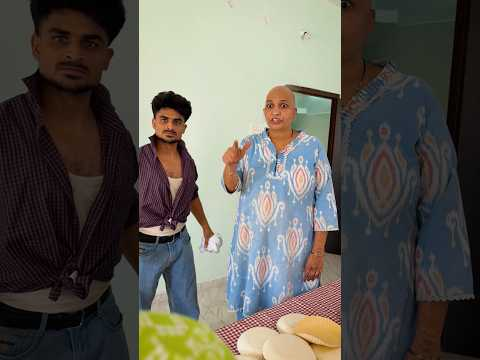
Hostel Girls Vs Warden Chai Challenge — 印度宿舍偷渡奶茶
Shreemani Tripathi
59s · 2026-04-16
本周 50 条池中播放量最高（47.5M）。印度女宿舍学生 vs 严厉舍管奶奶的"奶茶藏匿挑战"，59 秒包含"密谋→藏匿→差点被抓→成功"完整微剧情。点赞 751K 而评论仅 599——典型"看完即划走"的高完播率内容，叙事节奏与南亚日常审美高度匹配。对西幻卡牌的启示：把"宿舍 vs 舍管"抽象为"学徒 vs 严师"NPC 配对，做限时夜间活动。
🎭 角色设计
- "调皮少女 + 古板长辈"二人组；西幻可改为"魔法学徒 vs 院长"
- 代际对抗 NPC 配对：严厉但暗中关心的导师原型
⚔️ 玩法/活动
- "夜间偷渡限时挑战"；在 NPC 巡逻路径中收集禁忌物品
- 潜行 + QTE 复合玩法：被发现则触发惩罚迷你游戏
🎬 广告制作
- "被禁止 vs 被渴望"对比开场；前 3 秒展示"明令禁止"+"我偏要做"
- 59 秒长格式 + 完整微剧情结构，适合更深度品牌广告
角色 4/5玩法 4/5广告 4/5适配 4/5
A 契合度高
4
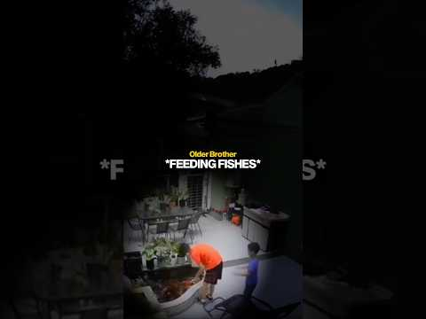
When Pushing Your Older Brother Backfires — 反向推搡惨案
Crimes Witness
16s · 2026-04-15
16 秒物理喜剧——弟弟想推哥哥反被甩飞。本期评论数最高（13.8K），证明"短促 + 强烈意外结果"在 YouTube 仍是评论触发器。完全无对话，纯视觉物理反差，适合任何语言市场，是西幻战斗演出"小怪挑战大 BOSS 反被秒"招式动画的真实参考。
🎭 角色设计
- "逞强弟弟"vs"沉稳哥哥"原型；新手 vs 高玩的"自不量力"对照
- 二元角色对抗：体型/能力差悬殊产生戏剧张力
⚔️ 玩法/活动
- "反伤/反弹"技能机制；弱小攻击触发强大反击的卡牌互动
- 16 秒微关卡：挑战远超等级的对手观看反差结果
🎬 广告制作
- "以小博大反被秒"剧情公式；用 16 秒纯视觉物理反差替代任何旁白
- 无对话适配全球市场，音效需要"轰然倒地"夸张反馈
角色 3/5玩法 4/5广告 4/5适配 3/5
B 结构借鉴
5
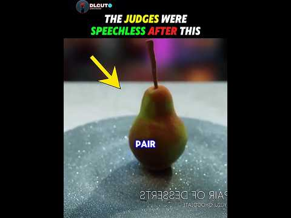
Judges Were Speechless — 厨神大赛震撼时刻剪辑
ZESTY
58s · 2026-04-14
MasterChef 真人秀片段二剪——业余选手端出让评委哑口无言的菜品。29.3M 播放验证"权威人物震惊"模板永不过时。58 秒剪辑控制在"展示→端出→评委表情→结论"四幕节奏。对游戏的启示：任何"评分系统/排名榜"都应有专门的"权威 NPC 反应动画"，玩家爆衣装备/SSR 抽卡时给予明确认可反馈。
🎭 角色设计
- "权威评委 NPC"原型；给玩家成就提供"被高位认可"的情感价值
- 意外天才主角：从"业余"到"大师"的逆袭弧
⚔️ 玩法/活动
- "评分认证系统"；高级 NPC 对玩家最高级装备/技能给出反应
- 限时大赛玩法：玩家提交作品/操作，NPC 公开评分
🎬 广告制作
- "评委震惊"反应剪辑公式；前 3 秒锁定"权威人物表情"
- 58 秒结构：展示→提交→反应→结论，可直接套到任何能力展示广告
角色 3/5玩法 4/5广告 4/5适配 3/5
B 结构借鉴
6
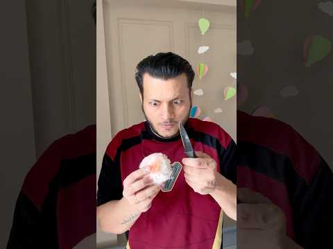
Soft Ball Ko Cut Kar Diya 🔪 — 切开网球的解压
Box Of Vengeance
37s · 2026-04-16
印度频道 Box Of Vengeance 切开软球展示内部结构，纯解压无对话。19.8M 播放但 890K 点赞——点赞率 4.5%，本期最高之一。"剖开未知物体"满足"知道里面是什么"的原始好奇心，适配西幻"宝箱开启/装备分解"演出。建议把每件装备的分解动画做成 5 秒级 ASMR 体验。
🎭 角色设计
- "工匠/拆解者"原型；戴手套+刀具的匠人形象，适合炼金/分解 NPC
- 无台词角色定位：动作即性格
⚔️ 玩法/活动
- "装备分解 ASMR 系统"；每件 SSR 分解配独立动画+音效
- 宝物剖切玩法：玩家手动切开未知物体获得随机奖励
🎬 广告制作
- "剖开未知物体"猎奇钩子；前 2 秒展示密封物体+刀具特写
- 37 秒结构允许慢节奏，无对话适配全球市场
角色 2/5玩法 3/5广告 4/5适配 2/5
C 仅参考
7
"Villains Aren't Born, They Are Made" — 反派觉醒 MV 剪辑
MenZuration
60s · 2026-04-19
影视角色"Chronicle"反派觉醒混剪 + Panic! At The Disco 的"House of Memories"老歌 BGM。23.5M 播放 + 60 秒满格 + 评论 10.6K，验证"反派起源故事 + 怀旧老歌"是欧美 fan edit 长期高互动的常见公式。这是西幻卡牌 BOSS 介绍 trailer 值得参考的成熟模板：让 BOSS 的"被迫黑化"故事配特定 BGM，做 60 秒短预告。
🎭 角色设计
- "被迫黑化 BOSS"原型；曾经的英雄被命运/背叛推向反派
- 悲剧反派：玩家既怕又怜，提升 BOSS 战情感重量
⚔️ 玩法/活动
- "反派起源回忆关卡"；玩家 BOSS 战前先操作 BOSS 的过去
- 黑化分支剧情：玩家选择决定 NPC 是否成为反派
🎬 广告制作
- "反派起源 + 老歌 BGM"60 秒预告参考模板；BOSS 卡介绍可作借鉴
- 选定一首怀旧/史诗 BGM 作为系列反派统一音乐符号
角色 5/5玩法 4/5广告 5/5适配 5/5
A 契合度高
8
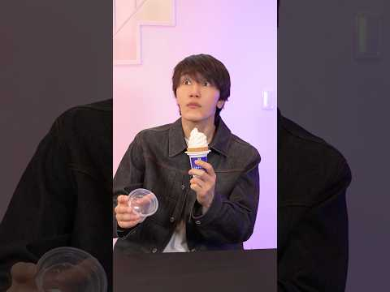
VS Mom 😂 — 跨代际表情对决
ISSEI / いっせい
29s · 2026-04-18
ISSEI 是日本 YouTube 头部短视频博主之一，一直保持高产+高完播。33.9M 播放，但评论仅 278——典型"看完笑完即划走"的轻消费爆款。"VS Mom"题材验证"跨代际表情对决"是无国界喜剧公式。对游戏的启示：把"妈妈"等家人转换为可挑战的轻 BOSS，做表情包 PvP 微玩法。
🎭 角色设计
- "家人化对手"原型；妈妈/兄弟姐妹/伴侣作为日常 PvP NPC
- 高对比度二人组：儿子/女儿 vs 长辈，情绪反差驱动笑点
⚔️ 玩法/活动
- "跨代际表情 PvP"；表情包对决/家务挑战赛迷你游戏
- 29 秒短关卡：每天一关"今天挑战谁"，轻量重复玩法
🎬 广告制作
- "VS Mom"公式 + 😂 emoji 标题；两人构图前 1 秒锁定
- 29 秒为本期最佳"轻消费"广告时长，完播率最高区间
角色 3/5玩法 3/5广告 4/5适配 3/5
B 结构借鉴
9
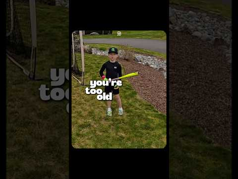
"Humbled Him Real Quick 😤" — 速降反杀剪辑
HopeleesCore Fuel Up
20s · 2026-04-16
20 秒嚣张挑衅者被秒回剪辑，典型"hopecore"系——用现实故事制造短促情绪宣泄。578K 点赞 + 7K 评论 + 20 秒，印证"嚣张→反杀"是当前 YouTube Shorts 最稳定的"愿望达成"公式。频道名"HopeleesCore Fuel Up"采用错拼 + 双语态混合，是匿名/小号集群常见命名风格。
🎭 角色设计
- "嚣张挑衅者 → 被秒新人"原型；PvP 失败演出的"教育时刻"
- 玩家自我代入"沉默高玩"角色，反派提供爽感对照
⚔️ 玩法/活动
- "反向反杀"机制；低等级被刷的玩家有概率触发"高玩附身"反杀
- 20 秒一局微 PvP：嚣张表情→招式→秒杀结算
🎬 广告制作
- "嚣张→反杀"20 秒结构；前 5 秒 emoji 表情包，后 15 秒完成羞辱反转
- 适合每日挑战类游戏的轻量推流广告
角色 3/5玩法 3/5广告 4/5适配 3/5
B 结构借鉴
10
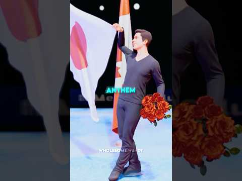
Iceskater Who Grabbed A Flag ⛸️🎌 — 滑冰女孩接旗瞬间
Wholesome Wendy
23s · 2026-04-15
23 秒滑冰女孩在花样表演中精准接住飞向她的国旗——意外但庄严的体育英雄瞬间。27.6M 播放但评论仅 1.4K，属于"惊叹完即划走"的纯爽点内容。点赞率 1.7%，频道"Wholesome Wendy"专注"温暖瞬间"垂类。这是"QTE 完美命中"演出在游戏内的现实参照，完美执行的瞬间值得专门慢镜+音效。
🎭 角色设计
- "运动型女英雄"原型；优雅+精准的女性角色定位
- 国旗/荣誉符号绑定：为角色赋予"代表某阵营"的仪式感
⚔️ 玩法/活动
- "完美 QTE 慢镜"机制；关键操作成功触发慢动作+特殊音效
- 运动主题节庆活动：玩家在限时关卡中完成花式表演
🎬 广告制作
- "意外英雄瞬间"23 秒结构；前 5 秒铺垫表演，后 3 秒高光定格
- 🎌 emoji + ⛸️ 双图标标题，锁定特定运动垂类受众
角色 3/5玩法 3/5广告 3/5适配 3/5
B 结构借鉴
数据总览互动分排行
| # | 频道 | 标题 | 播放量 | 点赞 | 发布日期 | 内容类型 |
|---|---|---|---|---|---|---|
| 1 | @Goofy Recaps | Speed Made His Day — IShowSpeed 暖心瞬间 | 41.9M 🏆 | 1.68M 🏆 | 04-16 | 明星暖心 |
| 2 | @Mappelz | Bro Is A Lost Cause 💀 | 32.7M | 1.16M | 04-15 | 自食其果 |
| 3 | @Shreemani Tripathi | Hostel Girls Vs Warden Chai 印度宿舍 | 47.5M | 751K | 04-16 | 代际对抗 |
| 4 | @Crimes Witness | Pushing Older Brother Backfires | 30.7M | 804K | 04-15 | 物理喜剧 |
| 5 | @ZESTY | MasterChef Judges Speechless | 29.3M | 787K | 04-14 | 真人秀剪辑 |
| 6 | @Box Of Vengeance | Soft Ball Cut Open 印度解压 | 19.8M | 890K | 04-16 | 拆解满足 |
| 7 | @MenZuration | Villains Aren't Born — 反派觉醒 MV | 23.5M | 669K | 04-19 | 影视混剪 |
| 8 | @ISSEI / いっせい | VS Mom 😂 跨代际表情 | 33.9M | 421K | 04-18 | 家庭整蛊 |
| 9 | @HopeleesCore Fuel Up | Humbled Him Real Quick 😤 | 23.4M | 578K | 04-16 | 嚣张反杀 |
| 10 | @Wholesome Wendy | Iceskater Grabbed A Flag ⛸️🎌 | 27.6M | 481K | 04-15 | 运动荣耀 |
😂 Reddit Memes · VOL.004
表情包 Memes 热门
「希望被打碎」与「连点成线」是本期两条主线信号——#1「Don't give me hope」68.8K 赞,可参考「先吊胃口再失望」反转套路;#2「dangerously close to connecting the dots」57.8K 赞 + 893 评论,体现「认知觉醒」叙事钩子的吸引力。⚠️ 本期含荷兰房价/美国就业/Tuvalu 气候三条政治敏感 meme,结论栏与 ma4 bullet 已 ⚠️ 标注以提示风险。
📊 来源 r/memes top/week
🏆 最高赞 68.8K
💬 最高评论 2197(#4 jobs narrative)
💡
Meme 4 维拆解框架 · Vol.004
Meme 对游戏研发的价值不在「这个梗讲了什么」,而在其值得参考的格式与情绪。本模块按 4 个维度拆解每条 Meme:📐 视觉模板(格式怎么套进游戏)、😈 情绪结构(靠什么情绪驱动传播)、🎭 角色原型(梗里的「人」是什么原型)、🔄 Remix 机制(为什么能二创、UGC 潜力如何)。每条附 4 项
X/5 评分 + A/B/C 可用性标签。数据来源:Reddit (r/memes, r/dankmemes, r/gaming, r/MemeEconomy),本周 2026-04-16 ~ 04-23 upvotes 排序。
本期 Memes 游戏研发结论
优先级:角色/叙事 > 玩法反信号 > UGC 机制
角色/叙事方向
#1 假希望破灭者「Don't give me hope」68.8K 赞,体现「先吊胃口再失望」在欧美是较有代表性的情绪钩子,西幻卡牌活动 NPC 可联想到「冒险贩子」原型——给玩家一个看似翻盘的提议然后揭示陷阱。#2 认知觉醒型反派「dangerously close to connecting the dots」57.8K 赞 + 893 评论,呈现「拼图揭真相」叙事张力,可参考用于西幻卡牌中段剧情转折——主角识破幕后黑手时的关键演出帧。#10 评论怒火型角色「Worst. Reviews. I. Have. Ever. Seen.」一字一顿强调结构 1610 评论,呈现「愤怒嘲讽」型 NPC 嘲讽弹幕的可参考性,可作为失败提示语原型。
玩法/活动方向
#1 假希望机制反信号——68.8K 赞显示玩家对「假装给希望然后剥夺」的情绪共鸣强烈,但游戏内不建议用此模式做付费/抽卡设计(即「显示稀有奖励但实际不掉落」),会触发玩家信任危机;较适合用作叙事剧情转折,应避免用作系统机制。#5 严肃疲劳信号「Serious is the worst」36K 赞,反映欧美受众对「过度严肃叙事」的逆反——西幻卡牌活动文案值得考虑保留 30%+ 自嘲/打破第四面墙桥段,纯严肃史诗叙事风险较高。#6 完美主义反信号「perfect haircut never exis...」32.1K 赞,呈现「追求完美必败」的集体认知,玩法可参考——故意设计「无法达成 100%」的隐藏成就,反向激发追求欲。
社媒/UGC 方向
#4 评论引爆王「current jobs narrative」2197 评论本期最高,反映「身边事吐槽」型 meme 的 UGC 引爆力——游戏失败截图配「current 抽卡 narrative in a nutshell」是较成熟的参考模板,UGC 自传播潜力较强。#7 自来源造梗「source: me」31.8K 赞,呈现「我自己就是出处」反权威幽默,广告文案可参考「source: 我自己玩了 200 小时」对抗官方背书疲劳。⚠️ #3 荷兰房价 / #4 美国就业 / #9 Tuvalu 气候三条均涉及国际政治/民生议题——不建议直接用于游戏内容/广告素材,仅可提取「弱者被系统压抑」「连点成线觉醒」叙事结构,应避免触碰具体国家/政策/事件本体。#10 强调式句式「Worst. Reviews. I. Have. Ever. Seen.」一字一顿格式可参考用于活动 banner 标题。
1
经典台词复用 · 图片宏
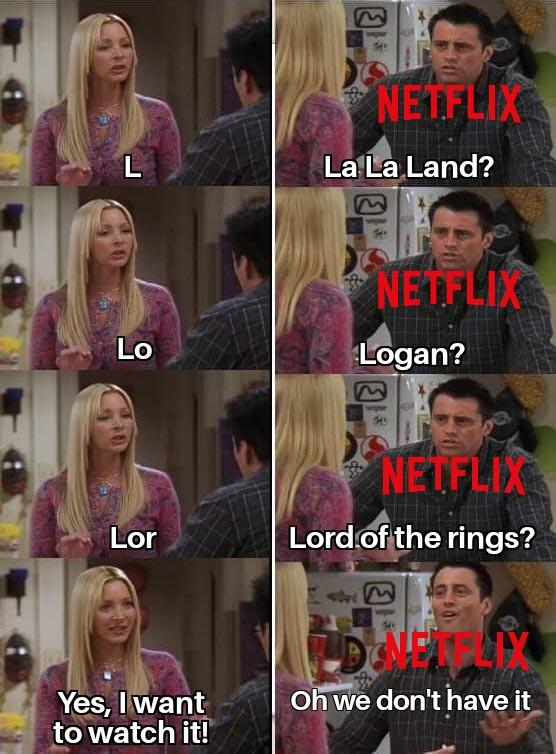
★ 全周最高
Marvel《Avengers: Endgame》Hulk 经典台词的衍生表达——本期最高赞 68.8K,反映「假希望破灭」情绪在欧美的深度共鸣。「别这样,别给我希望」精准戳中现代人对失望的预防性自我保护心理。
📐 视觉模板
- 影视台词截图衍生模板:Marvel 经典帧 + 角色侧脸 + 加大字幕,较低制作成本即可触发「集体记忆共鸣」
- 参考路径:游戏内挫败场景截图 + 「Don't give me hope」字幕 = 通用自嘲素材;无版权问题的衍生表达
😈 情绪结构
- ★ 假希望预防性恐惧:不是「失望」而是「不敢期待」——现代人对希望的应激式拒绝触达较深层焦虑
- 情绪密度极高但评论低(342) = 「太懂无需多说」的沉默痛点共鸣;转发率 > 讨论率
🎭 角色原型
- 假希望贩子 NPC:西幻卡牌中可联想到「冒险贩子/任务发布人」原型,给玩家一个看似翻盘的提议然后揭示陷阱
- 可参考反派初见演出——先抛出诱人提案后秒翻脸;戏剧张力较强,较适合中后期剧情转折点
🔄 Remix 机制
- 通用拒绝句式:「Don't [动作]. Don't give me hope.」「假装好消息」场景较适合套用
- 玩家抽卡 SSR 概率提示弹窗 + 此句式 = 较易传播的自嘲素材;UGC 门槛较低
视觉 4/5
情绪 5/5
角色 4/5
Remix 5/5
A 契合度高
2
悬疑反应 · 图片宏
★ A 级信号
57.8K 赞 + 893 评论,呈现「拼图觉醒」叙事钩子在欧美的吸引力。「他危险地接近真相」格式较易触发观众的「代入侦探视角」快感,是欧美中段剧情张力中较有代表性的参考公式。
📐 视觉模板
- 第三人称悬疑旁白模板:画面呈现某角色思考状,字幕作为「全知视角」点评其接近真相;格式较具电影感
- 参考路径:游戏内 BOSS 战前夕动画——主角凝视证物 + 旁白「他危险地接近真相」= 较成熟的预告片参考模板
😈 情绪结构
- ★ 拼图觉醒快感:观众不是被动接受真相而是「跟随推理」,认知主动性较可能是 893 评论的根源——大家都在猜真相是什么
- 悬疑感 + 智力优越感双重情绪驱动;评论区呈现「集体破案现场」氛围,UGC 自发讨论
🎭 角色原型
- ★ 觉醒型主角原型:从被骗到识破——西幻卡牌活动剧情中段较有代表性的角色弧光;主角识破幕后黑手时的关键演出帧
- 也可联想到「冷眼旁观者」NPC——一切尽在掌握的智者视角,与 #1 假希望贩子形成镜像对比
🔄 Remix 机制
- 通用接近真相句式:「[X] is dangerously close to [真相]」揭秘场景较适合套用
- 玩家发现游戏隐藏机制截图 + 此句式 = 攻略党自传播素材;Reddit/X 双平台传播潜力较强
视觉 4/5
情绪 4/5
角色 5/5
Remix 5/5
A 契合度高
3
民生吐槽 · 图片宏
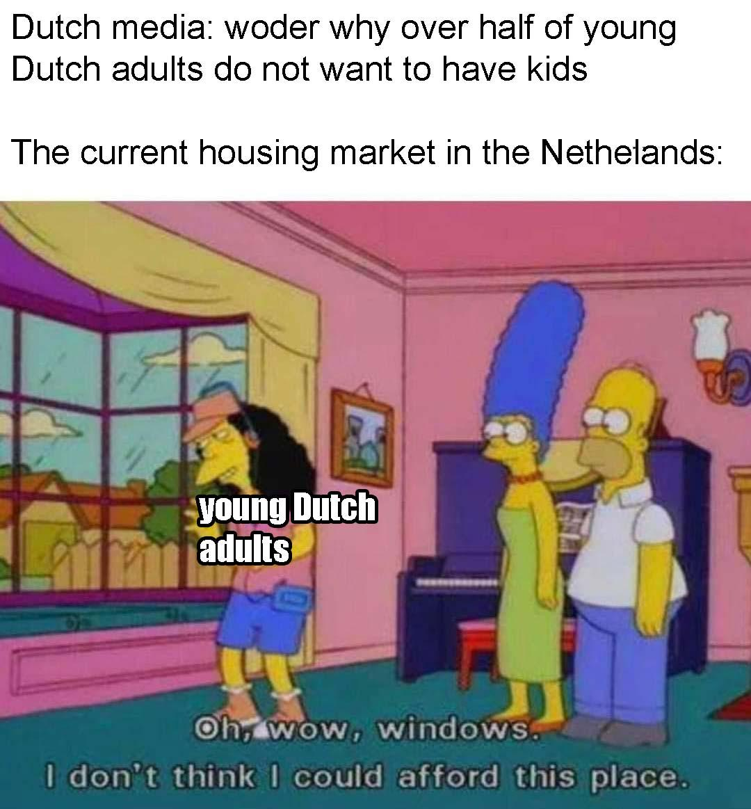
⚠️ 地缘民生
国际民生议题——荷兰房价危机引发跨国共鸣。37.7K 赞 + 883 评论,呈现欧美玩家对「住房不可及」的集体焦虑,但该 meme 核心是政治议题,⚠️ 不建议直接复用图像/文案,仅提取「弱者被系统压抑」叙事结构。
📐 视觉模板
- 对比型吐槽图:理想 vs 现实双图对比;格式可参考但内容⚠️ 不建议直接挪用
- ⚠️ 应避免在游戏内/广告素材中影射任何具体国家房价/民生政策——文化敏感度较高,不建议直接挪用
😈 情绪结构
- 系统性无力感:不是个人失败,而是「系统让你失败」——比单纯抱怨更深一层的结构性愤怒
- ⚠️ 评论区(883)情绪化较高——具体国家政策讨论;此情绪强度较高但应避免在游戏内复制,不建议直接挪用
🎭 角色原型
- 被剥夺的小人物:努力但难以企及的角色原型;可参考西幻卡牌中「失地农民」「被流放贵族」等设定
- ⚠️ 角色背景应避免与现实国家/政策挂钩;仅借「努力但被系统压垮」骨架构建虚构世界悲剧,不建议直接挪用
🔄 Remix 机制
- 结构可参考:「努力 X 仍然够不到 Y」的对比叙事;但⚠️ 应避开所有现实政治指涉
- ⚠️ 不建议直接 UGC 化此模板——任何复用都可能触发文化/地缘争议,应避免直接挪用
视觉 3/5
情绪 4/5
角色 3/5
Remix 2/5
C 观察储备
4
宏观吐槽 · 图片宏
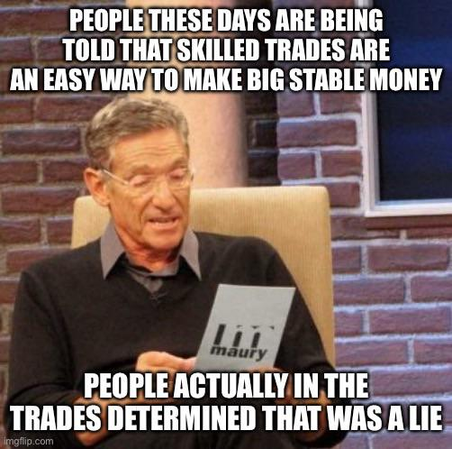
💬 评论最高
本期评论最高(2197)——「就业市场叙事」触发欧美玩家较深的集体焦虑。涉及美国就业政策/经济话题,⚠️ 游戏内不建议直接复用,仅提取「官方叙事 vs 真实体验」反差叙事结构。
📐 视觉模板
- 「官方说法 vs 现实」对比格式:上方政府/媒体叙事,下方真实体验;反差结构较可能是 2197 评论的引爆点
- ⚠️ 视觉模板可参考(双层对比),但不建议直接复用——应避免在游戏内/广告中影射具体国家就业政策
😈 情绪结构
- ★ 叙事不信任怒火:对「权威表态」的系统性不信任——欧美 Z 世代较核心情绪;触发本期评论数最高
- 情绪烈度较强:愤怒 + 嘲讽 + 共鸣三重叠加;比 #1 假希望更具攻击性
🎭 角色原型
- 识破谎言的觉醒者:与 #2 connecting the dots 属同一原型脉络——「我看穿了体制」型角色
- ⚠️ 西幻设定中可联想到「揭穿王室谎言的吟游诗人」等纯虚构原型,不建议直接复用——应避免与现实政体挂钩
🔄 Remix 机制
- 通用对比句式:「The current [话题] narrative in a nutshell」+ 反差图;游戏可参考「The current 抽卡 narrative」做自嘲营销
- ⚠️ UGC 化时建议去政治化,不建议直接复用——仅保留「官方说法 vs 真实体验」骨架,抽卡概率/玩法体验吐槽是较安全的靶点
视觉 3/5
情绪 5/5
角色 3/5
Remix 4/5
B 结构借鉴
5
性格反讽 · 图片宏
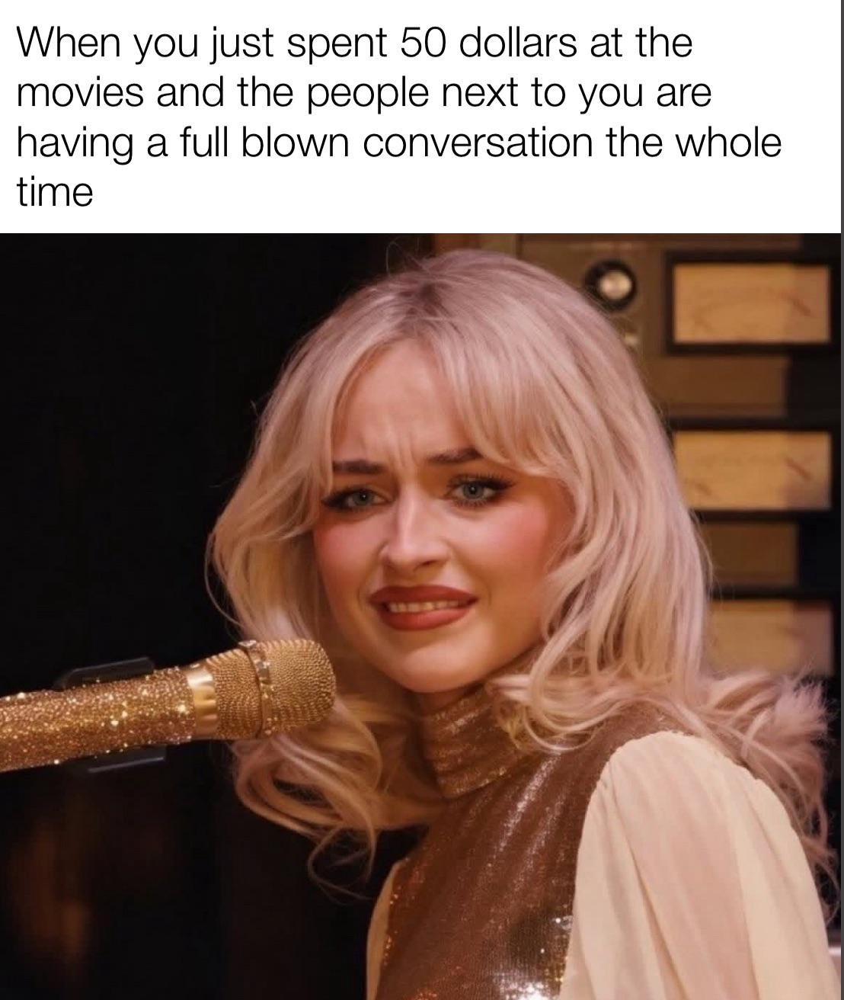
★ 玩法反信号
36.1K 赞,反映欧美受众对「过度严肃」的集体逆反——可视为西幻卡牌叙事的反信号。游戏文案/活动剧本若 100% 严肃史诗调性,在欧美较易触发疲劳;建议保留 30%+ 自嘲/破第四面墙桥段。
📐 视觉模板
- 性格判定式吐槽:「[某性格] is the worst」断言句 + 反应图;格式简洁,较易套用
- 参考路径:游戏角色调侃 BOSS 时弹幕「Being serious is the worst」= 角色性格瞬间立体化
😈 情绪结构
- ★ 反严肃逆反:对「装腔作势」的群体免疫力——欧美 Z 世代较抵触史诗腔调
- 情绪结构是「轻蔑」+「松弛感」;高赞低评 = 大家心照不宣,无需讨论
🎭 角色原型
- 松弛幽默型主角:打破第四面墙、自嘲、不端架子的英雄原型——西幻卡牌中可参考作为主角团调剂角色
- 与传统「严肃骑士」「沉默战士」原型形成对照;欧美受众对此类角色的留存率较高
🔄 Remix 机制
- 通用否定句式:「[X] is the worst」不喜欢的事物较适合套用;UGC 门槛较低
- 玩家可二创「Reading patch notes is the worst」「Daily quest is the worst」等;较易形成社群自发吐槽生态
视觉 3/5
情绪 4/5
角色 4/5
Remix 5/5
A 契合度高
6
完美主义反讽 · 图片宏
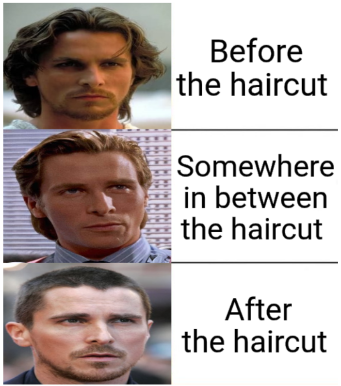
完美崩塌
「完美 X 不存在……」格式被截断的视觉,呈现「话还没说完就已经被打脸」的认知反差。32.1K 赞但仅 186 评论——较典型的「太懂无需说」沉默共鸣型 meme。
📐 视觉模板
- 句子被截断式:文字以「exis...」结尾,视觉上模拟「话还没说完就被打脸」;较强的临场感
- 参考路径:游戏成就页面文案「Perfect run never exis...」= 即时自嘲,无需额外解释
😈 情绪结构
- 完美崩塌瞬间:不是「失败」而是「失败发生在你以为成功的瞬间」;比纯失败更具喜剧张力
- 「沉默共鸣」型(高赞低评):每个人都经历过,无需讨论确认
🎭 角色原型
- 追求完美的悲剧角色:每次差一点的角色弧光;西幻卡牌中可联想到「始终差一步达成大业」的旁支英雄
- 可参考「悲剧美学」叙事——角色魅力来自「无限接近但难以抵达」;欧美受众对此类角色情感投射较深
🔄 Remix 机制
- 通用截断句式:「The perfect [X] never exis...」完美主义场景较适合套用
- 游戏抽卡保底前差 1 抽截图 + 此句式 = 玩家自嘲素材;社群传播潜力较强
视觉 5/5
情绪 4/5
角色 3/5
Remix 4/5
A 契合度高
7
反权威造梗 · 图片宏
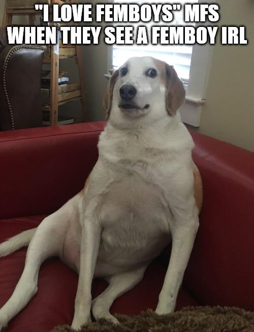
★ UGC 钩子
「来源:我自己」对学术化「source:」格式的反讽,31.8K 赞 + 678 评论,呈现欧美 Z 世代对「权威背书疲劳」的集体逆反。可作为 UGC/广告文案的参考解药。
📐 视觉模板
- 学术格式戏仿:模拟论文/新闻末尾「source:」标注,但内容是「我自己」;格式较具反讽张力
- 参考路径:广告海报数据点旁标「source: 我自己玩了 200 小时」= 对抗权威背书疲劳的参考文案
😈 情绪结构
- ★ 反权威自信:不需要权威认证,「我说是就是」——欧美 Z 世代较核心情绪信号
- 比 #4「叙事不信任」更进一步:不只是质疑,而是绕开权威自我背书;评论区互相用此句式接力
🎭 角色原型
- 反权威自信角色:不需要外部认证的傲气型主角——西幻卡牌中可联想到「不靠贵族认证的草根英雄」
- 与 #1 假希望贩子的「外部诱惑」形成对比——这类角色靠「自我背书」吸引追随者
🔄 Remix 机制
- ★ 通用反权威 tag:数据/观点末尾标「source: me」即可;UGC 门槛较低
- 广告创意:玩家好评墙 +「source: 我自己」标签 = 自嘲式诚实营销;比官方背书可信度可能更高
视觉 4/5
情绪 5/5
角色 3/5
Remix 5/5
A 契合度高
8
克制吐槽 · 图片宏
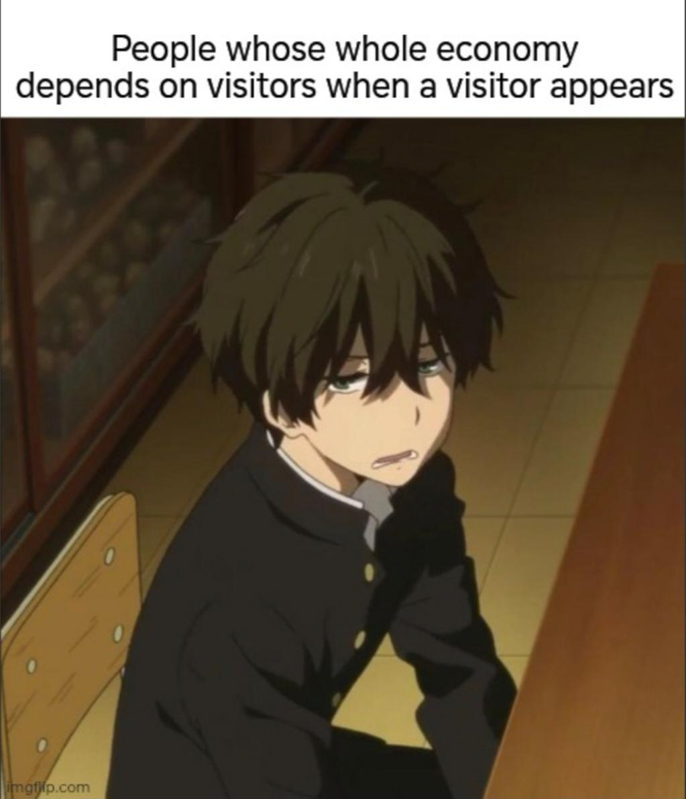
克制反差
「轻描淡写说大事」格式——27.1K 赞,呈现「克制式幽默」在欧美的传播效力。「他们不太高兴」实为强烈愤怒的高度克制表达,反差感是笑点核心。
📐 视觉模板
- 克制对比图:画面呈现激烈/灾难性场景 + 文字极其平淡;反差越大笑点通常越强
- 参考路径:游戏 BOSS 死亡动画 + 「他们不太高兴」字幕 = 较成熟的黑色幽默参考演出
😈 情绪结构
- 克制反差幽默:不是夸张而是「故意低调」——与美式直白吐槽形成英式冷幽默对照
- 情绪结构是「世故的微笑」;510 评论印证有讨论但不激烈,典型「品鉴型」共鸣
🎭 角色原型
- 冷静叙事者 NPC:看见灾难却用平淡口吻描述的角色——西幻卡牌中可参考「世故的旅店老板」「老练的吟游诗人」原型
- 辨识度较高,适合作为剧情解说人/章节过渡角色;欧美受众对此类「克制智者」原型情感投射较稳定
🔄 Remix 机制
- 通用低调句式:「They are not too happy about [X]」愤怒场景较适合套用,文化跨度较大
- 玩家被 BOSS 击杀截图 + 此句式 = 自嘲式分享素材;低调感往往比直接吐槽更易传播
视觉 3/5
情绪 4/5
角色 4/5
Remix 4/5
B 结构借鉴
9
时事政治 · 图片宏
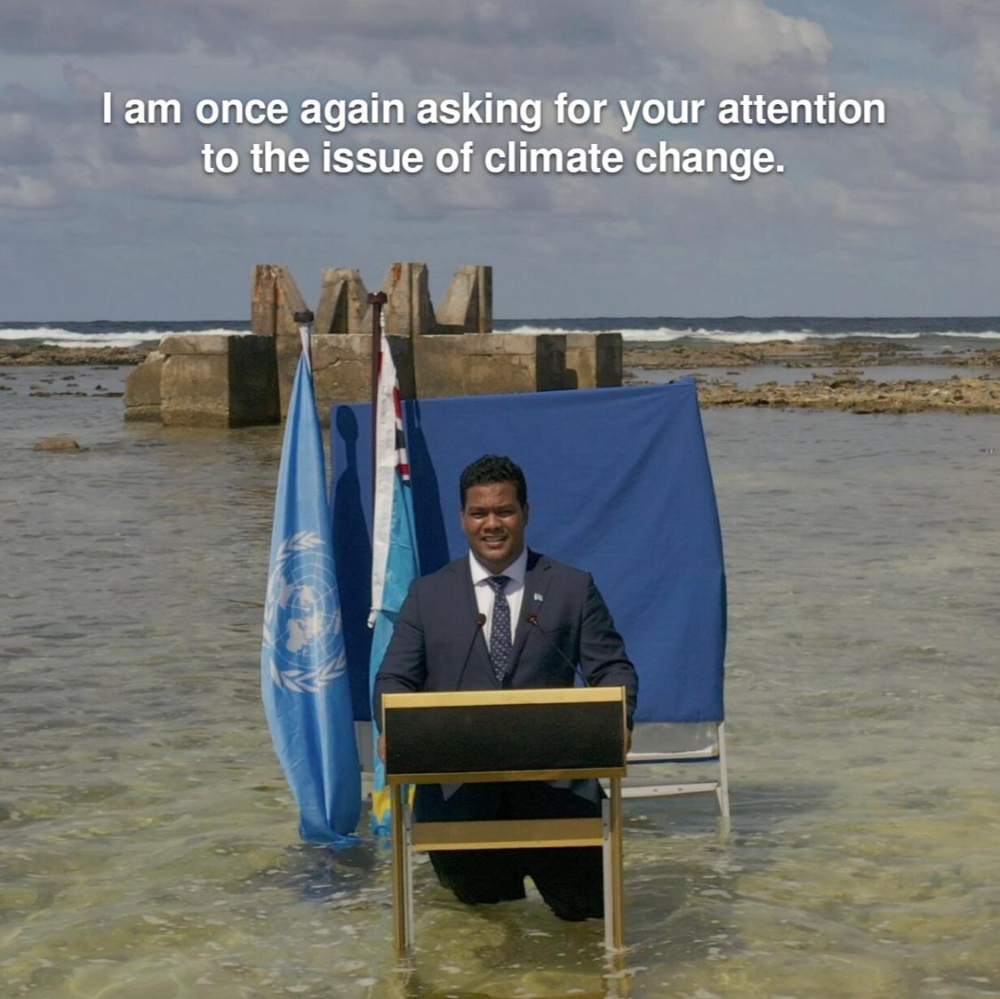
⚠️ 地缘政治
Tuvalu 部长气候变化主题(海平面上升淹没岛国)的政治讽刺 meme,26.5K 赞,呈现欧美对气候议题的关注度,但 ⚠️ 不建议直接用于游戏内容。仅作为「灾难叙事」结构的观察存档。
📐 视觉模板
- 真实政治人物图:含真实国家政要肖像,⚠️ 不建议直接复用——版权 + 政治双红线
- ⚠️ 视觉模板不建议参考——与真实政治人物/国家挂钩的素材均可能触发审查风险,应避免直接挪用
😈 情绪结构
- 气候末世焦虑:岛国消失的具象化叙事,可触发欧美中产环保情绪共鸣
- ⚠️ 情绪结构可作为「灾难叙事」素材库观察——但应避免直接转化为游戏剧情,不建议直接挪用
🎭 角色原型
- 濒亡文明守护者:可参考抽象原型——西幻卡牌中可联想到「守护即将湮没古城」的悲剧英雄
- ⚠️ 角色背景应避免与现实国家/气候议题挂钩;仅借「文明终结」骨架构建虚构悲剧,不建议直接挪用
🔄 Remix 机制
- ⚠️ 不建议任何形式 UGC 化——气候 + 真实政要双重敏感,应避免直接挪用
- ⚠️ 仅作为情报观察存档:欧美社群对气候叙事的接受度仍较高,但游戏复用门槛较高,不建议直接挪用
视觉 2/5
情绪 4/5
角色 3/5
Remix 1/5
C 观察储备
10
强调断句 · 图片宏
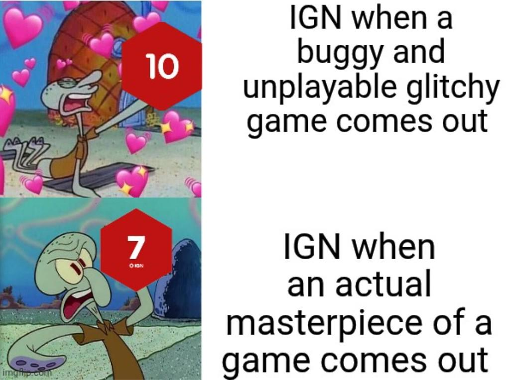
💬 高讨论度
1610 评论本期第二高——影视/产品差评吐槽 meme 引爆评论区集体讨论。一字一顿强调结构「Worst. Reviews. I. Have. Ever. Seen.」是欧美「极致愤怒」的代表性句式,可参考用于活动 banner 标题或失败提示。
📐 视觉模板
- ★ 一字一顿强调式:每个单词加句号,视觉上模拟咬牙切齿语气;格式辨识度较高
- 参考路径:游戏失败提示「Worst. Run. I. Have. Ever. Played.」= 较成熟的自嘲参考素材,玩法可参考用作连败彩蛋
😈 情绪结构
- ★ 极致愤怒嘲讽:1610 评论,呈现「咬牙切齿吐槽」型情绪的引爆力——比平铺直叙吐槽传播力明显更强
- 情绪结构是「忍无可忍」+「集体宣泄」;评论区呈现「大家轮流抱怨」氛围,UGC 自传播潜力较强
🎭 角色原型
- ★ 嘲讽型 NPC 弹幕:西幻卡牌活动 NPC 嘲讽弹幕较易套用;可作为失败提示语参考原型——「Worst. Strategy. I. Have. Ever. Seen.」
- 可参考「毒舌教官」「严苛长老」类角色;一字一顿语调 + 严肃表情 = 较高记忆点的 NPC 标志性句式
🔄 Remix 机制
- ★ 通用强调句式:「Worst. [X]. I. Have. Ever. [V].」抱怨场景较适合套用;UGC 模板属性较强
- 玩家可二创「Worst. Drop. Rate. I. Have. Ever. Seen.」社群吐槽;模板传播力是本期较强的 UGC 钩子之一
视觉 4/5
情绪 5/5
角色 4/5
Remix 5/5
A 契合度高
数据总览upvotes 排行
| # | 标题 | 来源 | 赞数 | 评论 | 格式 | 评级 |
|---|---|---|---|---|---|---|
| 1 | "Don't give me hope" | r/memes | 68.8K 🏆 | 342 | 图片宏 | A |
| 2 | "Connecting the dots" | r/memes | 57.8K | 893 | 图片宏 | A |
| 3 | "Netherlands housing" | r/memes | 37.7K | 883 | 图片宏 | C |
| 4 | "Current jobs narrative" | r/memes | 37.0K | 2197 🏆 | 图片宏 | B |
| 5 | "Serious is the worst" | r/memes | 36.1K | 565 | 图片宏 | A |
| 6 | "Perfect haircut never exis..." | r/memes | 32.1K | 186 | 图片宏 | A |
| 7 | "source: me" | r/memes | 31.8K | 678 | 图片宏 | A |
| 8 | "Not too happy about it" | r/memes | 27.1K | 510 | 图片宏 | B |
| 9 | "Tuvalu Minister" | r/memes | 26.5K | 282 | 图片宏 | C |
| 10 | "Worst. Reviews. I. Have. Ever. Seen." | r/memes | 26.0K | 1610 | 图片宏 | A |
🔥 US Google Trends · 文化热点情报
美区热搜 Top 10
基于 Google Trends 美区数据 + 时事补全精选，本期热搜以体育对决（76ers vs Knicks / Cubs）、时尚预热（Met Gala）、影视/游戏 IP（Pragmata、Avengers Secret Wars、Big Hops、Splatoon Raiders）、TikTok 文化（Color hunting、Uncomfortable life）以及政治焦虑（Trump-Iran 停火）多元交织。每条按游戏研发灵感 SOP 拆解，优先级：玩法/活动 > 角色设计 > 广告。延续 Vol.003 主线，重点标注「适合 AI 出图快验」的角色信号。
📅 数据周期 2026.04.16 – 04.23
🌎 地区 美国
📊 来源 Google Trends + 人工筛选
🎮 视角 游戏研发 · 内容情报
本期热搜 游戏研发结论
优先级：玩法/活动 > 角色 > 广告
角色设计方向
本期较具代表性的角色信号来自 Pragmata 的「孤独工程师 + AI 少女」双人组合——「成年人保护 AI 孩童」是欧美玩家近年较具情感穿透力的搭档原型之一，值得喂给 AI 出图验证闭环 试产一批概念草图。Avengers: Secret Wars 的多宇宙阵容侧面印证「同一英雄的不同变体（皮肤/对偶/堕落版本）」具备商业价值，可作为西幻卡牌「英雄变体系统」的市场参考。Met Gala 2026 提供高密度「华丽造型 mood board」——羽饰、长拖尾、复古宝石、超规格头饰，是限定皮肤/活动 NPC 值得参考的灵感库。Splatoon Raiders 的「年轻反叛涂鸦战士」原型补足卡牌阵营中「青年/亚文化」短板，可作为低龄阵营美术参考。
活动/玩法方向
76ers vs Knicks 的「兄弟之城对决」是本期情绪密度较高的信号——可衍生出「同源阵营内战」赛季玩法（如同一帝国分裂的两个王子争位），叙事成熟、玩家选边动力较强。Pragmata 的「黑客谜题 + 月面探索」双层玩法是模拟经营 + 解谜混合的成熟参考模板，可包装为「英雄科研副本」——派遣英雄破解谜题获取资源。Color hunting challenge 是 UGC 收集玩法的成熟结构——「每日寻找一种颜色拍照打卡」不妨联想到「每日寻找指定属性英雄入队」的轻量日活设计。Splatoon Raiders 的赛季节奏 + 路线图营销提供完整的「预告 → 测试 → 上线 → 资料片」运营模板。Avengers: Secret Wars 的多宇宙 crossover 可对应「跨阵营联动副本」赛季活动框架的设计思路。
广告创意方向
「Uncomfortable life」自嘲反差结构是本期 ROI 表现值得关注的广告母题——「我的人生很 uncomfortable，但游戏里我是王」的反差落点较适配模拟经营广告，钩子前 2 秒易达成情感共鸣。Big Hops 的「萌系跳跃 + ASMR 满足感」提供休闲广告舒适型钩子的参考模板。Met Gala 红毯走位镜头（慢镜头 → 闪光灯爆破 → 转身定格）可作为「英雄登场 reveal」广告高级感开场的成熟参考。Splatoon Raiders 路线图官宣展示了「分层揭秘 + 倒计时悬念」的玩法预告广告通用节奏，值得参考。⚠️ Trump-Iran 停火话题不建议直接用于广告素材，仅作为「不确定性背景下，玩家寻求掌控感」的情绪洞察参考。
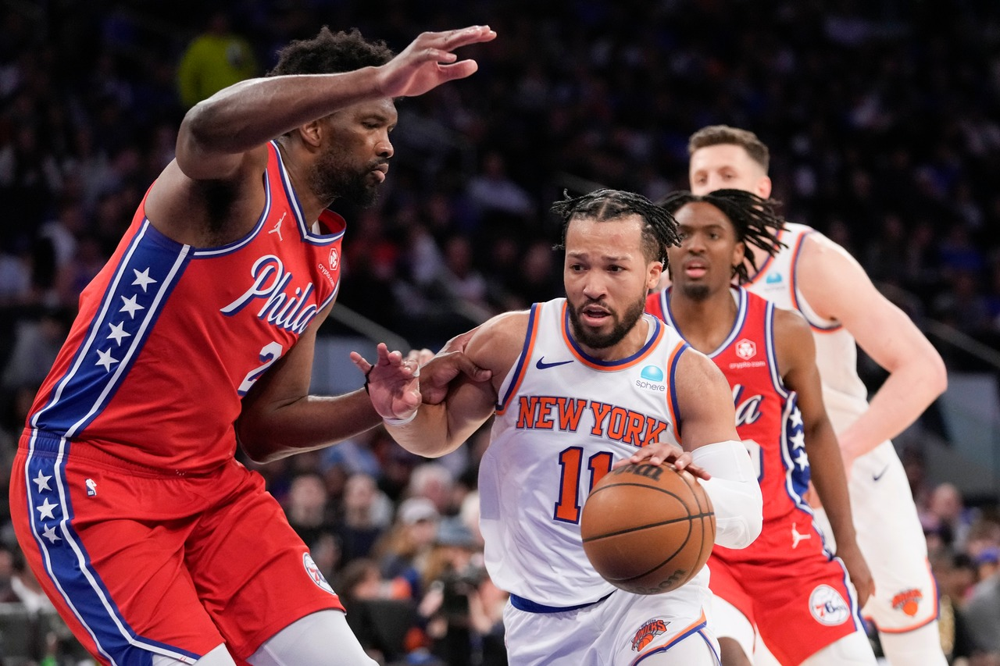
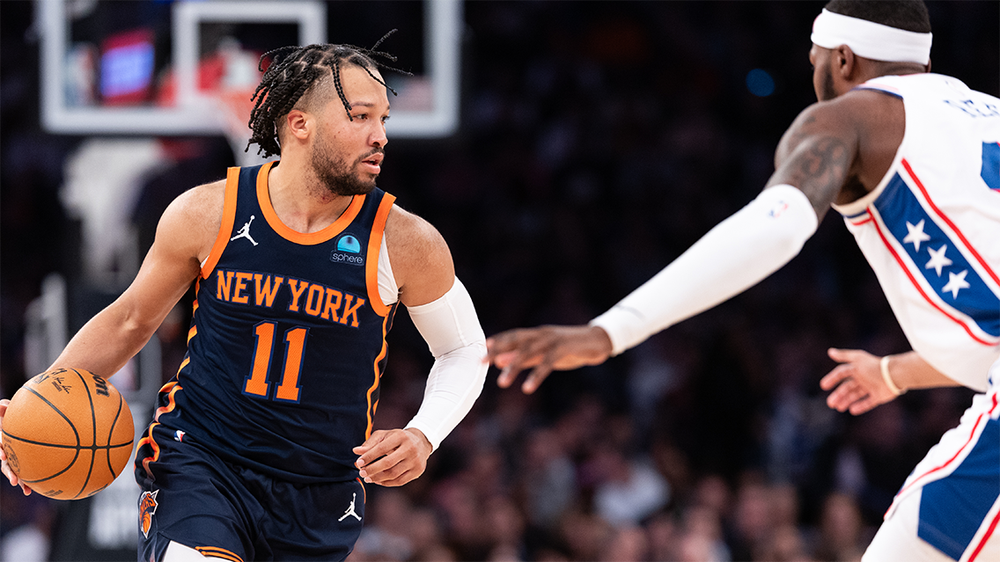
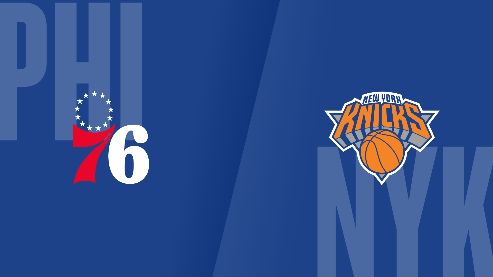
01
10M+ 搜索
- NBA 季后赛 76 人 vs 尼克斯系列赛打响，费城与纽约同属东海岸「兄弟之城」，城市文化既亲近又敌对，制造高密度社媒情绪释放与跨城 banter 文化。
- Embiid（76 人核心）vs Brunson（尼克斯核心）的明星个人对决叙事被反复剪辑放大，Twitter/TikTok 出现大量「场上仇敌、私下兄弟」的二创片段。
- 「同源对手」是 NBA 季后赛较有代表性的叙事母题之一——共同历史 + 当下立场对立，比单纯的强弱碰撞更具情感张力，对游戏剧情设计有直接借鉴价值。
🎭 角色设计
- 「兄弟阋墙」核心英雄组：设计两位共享背景（同门、同族、同阵营起源）但选择对立路线的英雄，互为对方的「专属克制对象」——比传统的善恶对立更具情感深度，AI 出图验证「同根异道」双人组的视觉表达
- 「巨人内线」与「快速控卫」对位原型：Embiid 类「重型内线坦克」 vs Brunson 类「机敏控场指挥官」是天然的近战 vs 智斗双人卡组——映射卡牌中「重战士 vs 战术家」的克制循环，是 AI 角色快验的优质组合
- 「城市象征」化身英雄：每位英雄是其归属城邦的视觉化身——服饰元素、纹章配色、武器材质都体现城市气质，强化「英雄 = 文明代言人」的叙事重量
- 视觉关键词：城市配色对比（费城蓝红 / 纽约橙蓝） / 球衣纹章西幻化 / 战靴改为重靴 / 篮球替换为战略球体武器 / 体育馆灯光转化为竞技场穹顶
⚔️ 玩法/活动
- 「兄弟之城内战」赛季玩法框架：赛季划分两个同源子阵营（「南都」「北都」），玩家选边后所有 PvP / 公会战在双阵营之间展开，赛季末按贡献度结算阵营专属奖励——叙事天然、选边动力强、玩家粘性高
- 「七场四胜」系列赛副本机制：直接借鉴 NBA 季后赛 BO7——同一对手反复对战 7 次，每次根据上场战况调整阵容，「连续作战 + 战术博弈」深度提升远超单场副本
- 「明星个人对决」事件机制：在公会战或赛季关键节点，触发「明星单挑」额外副本——双方公会推举一名核心英雄进行 1v1 对决，赢者为整队带来增益，强化核心玩家荣誉感
- 「主客场加成」战斗机制：在归属城邦的副本中获得额外 Buff（士气加成 / 资源效率），客场作战时加成减半，把现实体育的「主场优势」直接平移到游戏战斗设计中
- 「跨城 banter」社交系统：阵营间允许使用预设嘲讽 emote 和涂鸦留言，可控的玩家互动激化阵营情感，但在内容审核框架内防止过激
🎬 广告制作
- 「兄弟反目」开场钩子：两个英雄并肩战斗的回忆闪回 → 黑屏 → 现在两人剑指对方——「曾经的兄弟，今天的对手」的反差叙事，3 秒内建立强情感锚点，适合赛季宣传广告
- 「BO7 节奏剪辑」体育大片质感：以「Game 1」「Game 2」字幕分隔的连续战斗剪辑，模拟体育大片的赛季叙事节奏，对体育受众玩家吸引力极强
- 「Pick your city」选边广告：展示双方阵营英雄轮换出场，结尾「Which city do you fight for?」问句钩子，引发评论区选边互动，利用城市认同心理拉高广告互动率
角色 4/5玩法 5/5广告 4/5适配 4/5
A 契合度高
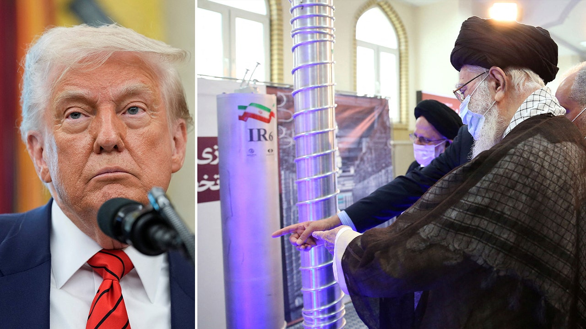
02
10M+ 搜索
- 美伊停火谈判延期成为本周持续高热的国际新闻，相关搜索覆盖政策解读、市场反应、人道议题等多维度，是美区情绪背景的重要底色之一。
- 「停火延期」本身制造「悬而未决」的集体焦虑——既不是开战也不是和平，这种中间态焦虑比明确冲突更具情绪渗透力，影响广泛的内容消费偏好。
- 政治议题不可直接用于游戏素材，但其制造的「不确定 / 寻求掌控感」情绪是当前用户心理的关键参数，对模拟经营、城建、资源管理类玩法的需求形成隐性推力。
🎭 角色设计
- 「和谈使者」中立外交家原型：在两个对立阵营间斡旋的外交官/使者角色——非战斗系英雄，技能围绕「降低敌意 / 临时停战 / 资源共享」，提供差异化的「叙事英雄」设计方向，规避政治敏感性
- 「乱世守望者」角色弧光：在动荡时代选择守护平民 / 难民的英雄——情感共鸣强但表达克制，避免任何具体政治符号联想，仅提取「乱世中的人性光辉」普世母题
- 视觉关键词：中性长袍设计（不指向具体文化） / 橄榄枝/和平鸽符号 / 金属与布料柔和混搭 / 暖色调避免政治化配色 / 持卷轴/信件而非武器
⚔️ 玩法/活动
- 「停火协议」赛季机制：阵营战进入特定阶段后强制触发「停火窗口」（如 24 小时不可发起 PvP），让玩家专注建设和恢复——避免长期高压消耗玩家热情，是节奏管理的优秀机制设计
- 「资源谈判」社交玩法：阵营间允许通过谈判机制交换资源（如 A 阵营用粮食换 B 阵营的木材），降低纯对抗带来的情绪疲劳，引入合作维度的复杂博弈
- 「重建期」赛季后玩法：每个对抗赛季后设置「重建期」，玩家专注修复城邦、慰问伤员、获取专属重建奖励——节奏设计参考现实「战后重建」叙事，情感留存深度高
- 「掌控感」核心玩法导向：当前国际不确定性背景下，玩家对「自己掌控的小王国 / 庄园」具有更强情感需求，模拟经营内容的市场窗口处于历史高位，应加大该方向投入
🎬 广告制作
- ⚠️ 严格禁止：广告中绝不使用任何政治人物形象、地缘政治符号、宗教元素或冲突暗示——平台必拒审，且极易引发玩家群体撕裂，风险极高
- 「在不确定的世界里，建一个属于你的国度」叙事：用「掌控 vs 失控」的情绪对比展示游戏的稳定感价值——「外界一切都在变，唯有你的王国永远属于你」是当前情绪背景下较有代表性的间接广告母题
- 「平静与建设」长广告结构：30 秒长广告展示玩家逐步建设王国的舒缓节奏，配合温和音乐和细腻光影——逆当前焦虑情绪下行的「治愈型广告」反而更具差异化竞争力
角色 1/5玩法 2/5广告 1/5适配 2/5
C 观察储备
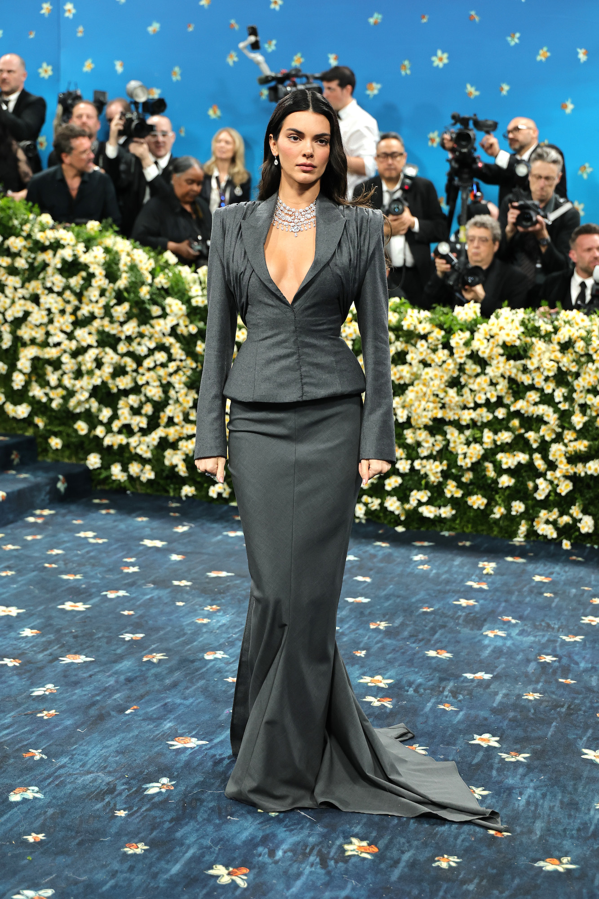
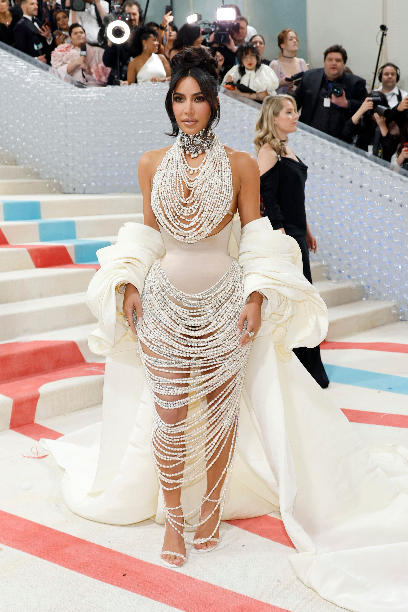
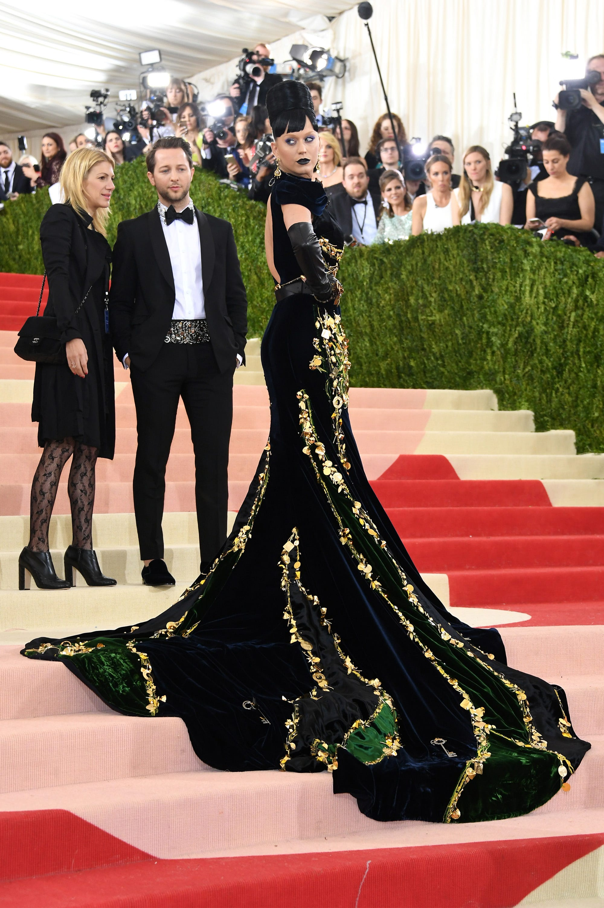
03
5M+ 搜索
- Met Gala 2026 红毯定档 5 月 4 日，本周进入预热爆发期，明星造型猜测、主题解读、过往经典回顾形成一波时尚搜索高峰。
- Met Gala 是欧美时尚体系最高级别的「华丽造型集中爆发窗口」——羽饰、长拖尾、巴洛克金、超规格头饰、戏剧化轮廓在一夜之间集中亮相，是限定皮肤/活动 NPC 的高密度灵感库。
- 时尚 KOL 与娱乐媒体高密度参与制造大量造型解读内容，每年制造 100+ 个 viral 红毯造型，是 AI 出图验证「华丽角色概念」的免费 mood board。
🎭 角色设计
- 「红毯华丽英雄」皮肤系列：将卡牌主角批量重新设计为「Met Gala 风」高级时装版本——羽毛披风、巴洛克金属胸甲、超规格头饰、长拖尾披风，可联想到「年度时装周」限定皮肤系列方向，借助 AI 出图工具尝试不同造型组合
- 「时装设计师」NPC 子类：游戏内设置「皇家造型师 / 时装大师」NPC——玩家完成任务后可解锁专属造型咨询，把「定制服装」做成深度角色互动玩法，满足玩家对「专属感」的追求
- 「华丽轮廓」视觉语言库：从 Met Gala 历年造型提炼可复用的轮廓元素——蓬松袖型 / 拖尾 / 极端 H 型剪影 / 头饰高度等，建立卡牌阵营的「华丽美术规范」，提升整体美术辨识度
- 视觉关键词：羽饰 / 巴洛克金 / 复古宝石（祖母绿、红宝石）/ 超规格头饰 / 长拖尾 / 戏剧化光影 / 红毯红 / 闪光灯爆破质感
⚔️ 玩法/活动
- 「时装周」赛季活动框架：每年一度的「皇家时装周」赛季活动——玩家收集材料解锁限定皮肤、参加「最佳着装」评选、完成「红毯走位」打卡任务，把现实 Met Gala 的仪式感完整移植
- 「皮肤评选」社交玩法：玩家展示自己的英雄定制造型，社区投票评选「本周最佳着装」——把单机收集玩法社交化，激励玩家投入更多搭配实验，提升皮肤购买动机
- 「明星造型师」养成线：玩家在游戏中扮演「皇家造型师」，培养自己的「时装品牌」，完成不同 NPC 的造型订单，类似模拟经营 + 时装搭配混合玩法，对女性玩家吸引力极强
- 「主题红毯」限时副本：每周更新「主题挑战」（如「黑金主题」「水下主题」），玩家组合符合主题的英雄阵容，根据「主题契合度」获得评分奖励，把美学品味变成游戏机制
🎬 广告制作
- 「红毯走位」reveal 广告结构：慢镜头 → 闪光灯爆破 → 英雄缓步走过红毯 → 转身定格——这是欧美玩家最熟悉的「重磅亮相」视觉语言，对新英雄/新皮肤上线广告具有直接情感效力
- 「Before / After」造型对比：展示同一英雄从普通版到 Met Gala 限定版的造型蜕变，「Glow up」叙事是 TikTok 最高完播率的内容母题之一，皮肤广告可参考使用
- 「Best Dressed」UGC 鼓励广告：呈现玩家社区中的「最佳着装」获奖造型，鼓励观众参与游戏内时装搭配——降低广告感、提升真实感、激发参与欲，三合一钩子结构
角色 5/5玩法 4/5广告 4/5适配 5/5
A 契合度高
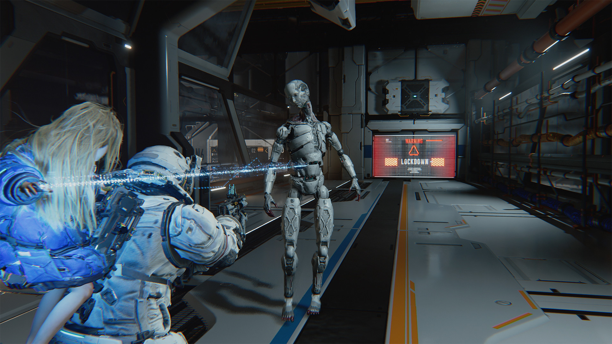
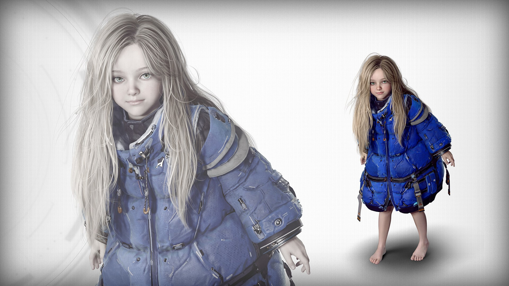
04
2M+ 搜索
- Capcom 原创科幻新 IP「Pragmata」本周热搜，宇航员 + AI 少女在月球基地穿梭的双人冒险设定吸引大量关注，独特的「黑客谜题 + 实时战斗」混合玩法是核心讨论点。
- 「成年人保护 AI 孩童」是欧美玩家近年最具情感穿透力的搭档原型（参考 The Last of Us / Death Stranding），Pragmata 进一步验证该公式的市场强度。
- 「黑客谜题」作为战斗核心机制——玩家在战斗中实时解密获取技能加成——是创新性的玩法层叠结构，对「智斗型英雄」设计有直接启发。
🎭 角色设计
- 「成年人 + AI 孩童」搭档原型：本期最具 AI 出图验证价值的角色组合——「重装宇航员叔叔 + 灵动 AI 少女」的反差搭档，可借助 AI 出图工具尝试不同搭档组合，观察哪类版本更具传播潜力
- 「孤独工程师」英雄子类：在荒凉环境中独自修复机械、解决谜题的角色——情感共鸣点是「沉默的责任感」，与传统的英雄主义叙事形成差异化补足，对成熟玩家吸引力强
- 「AI 伙伴」可成长 NPC：游戏中的 AI 少女会随玩家选择逐渐「学习」并改变行为——这种「AI 角色成长」机制是「玩家与角色情感联结」较突出的设计方向，相比传统的固定剧情对话更具沉浸感
- 视觉关键词：未来宇航服细节质感 / AI 少女发光纹路 / 月球荒凉景观 / 全息投影 UI / 冷蓝 + 暖金对比配色 / 机械与生命的视觉张力
⚔️ 玩法/活动
- 「黑客谜题 + 战斗」混合机制：战斗中实时弹出小型解密界面（连接节点、破解密码、调整频率），解密成功获得本场战斗的额外技能加成——把「智力 + 反应」融合为单一战斗体验，深度感极强
- 「双人协作」操控机制：玩家同时操控两个角色（宇航员负责战斗、AI 少女负责解密 / 支援）——单人但双角色协同的设计在卡牌游戏中可包装为「指挥官 + 副官」核心玩法
- 「月面探索」开放式副本：荒凉月面 + 散落的人类基地遗迹 + 谜题解锁路径——「探索 + 解谜 + 战斗」三合一的关卡设计，可作为「英雄科研副本」的玩法模板，差异化于纯战斗副本
- 「AI 学习成长」养成系统：玩家与 AI 少女的互动决定她的「成长方向」（理性 / 感性 / 战斗 / 支援），多周目可解锁不同结局——把养成深度与剧情多样性绑定，提升二周目动力
- 「碎片故事」叙事机制：通过谜题解锁碎片化的世界观叙事，玩家自行拼凑完整故事——降低初期叙事门槛、提升后期沉浸深度，是「叙事类玩家」的高粘性设计
🎬 广告制作
- 「沉默搭档」情感钩子：宇航员独自走在荒凉月面 → AI 少女突然出现 → 两人对视一眼 → 黑屏 → Logo 出现——3 秒内建立「孤独与陪伴」的情感弧线，远胜动作场面广告
- 「保护我的伙伴」叙事广告：宇航员挡在 AI 少女身前对抗机械敌人——「保护」叙事是欧美玩家最深层的情感钩子之一，对成熟男性玩家具有直接情感冲击
- 「黑客谜题」玩法预告广告：分屏展示玩家同时进行战斗 + 解密，「Two minds, one mission」slogan，差异化于纯战斗的玩法预告，吸引「智力型」玩家群体
角色 5/5玩法 5/5广告 4/5适配 4/5
A 契合度高
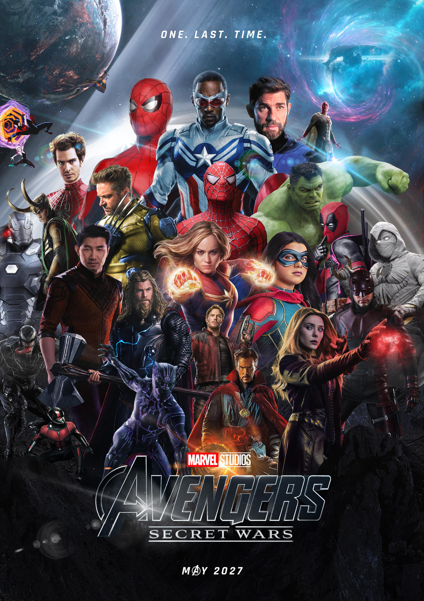
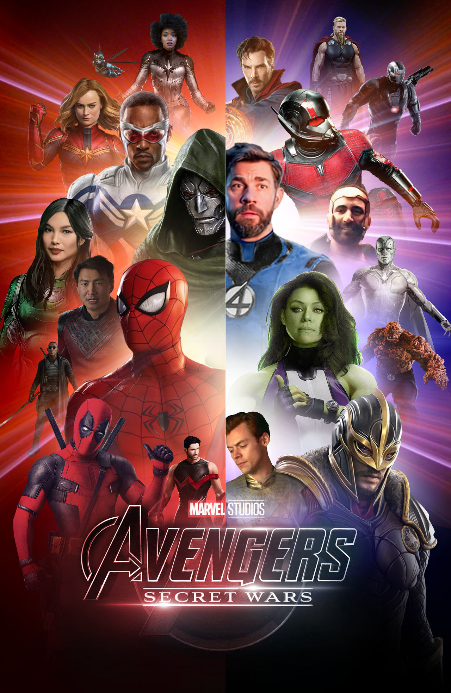
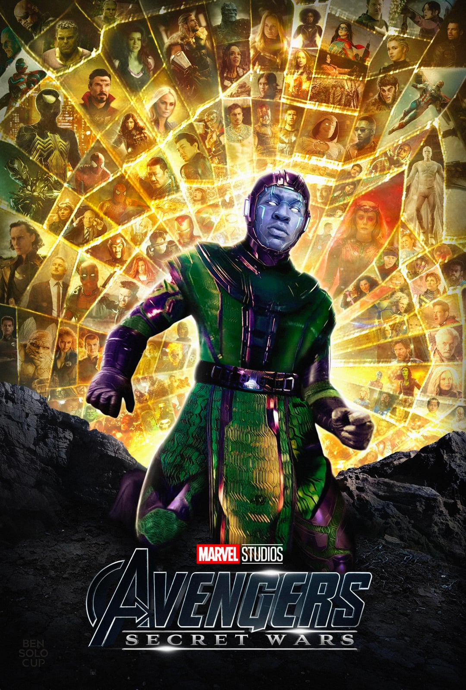
05
5M+ 搜索
- Marvel 影业新作「Avengers: Secret Wars」预热信息持续释出，多宇宙概念再次成为热搜核心，演员阵容猜测、不同宇宙变体角色讨论形成持续话题流。
- 「多宇宙 crossover」叙事验证「同一英雄的不同变体」具备强商业价值——同一角色的不同时间线 / 平行宇宙版本可形成完整的「英雄变体系统」，是西幻卡牌「变体皮肤系统」的市场背书。
- 「跨阵营角色集结」叙事是赛季活动的天然模板——把不同阵营的核心英雄临时集结对抗共同敌人，制造「玩家阵容变化」的活动新鲜感。
🎭 角色设计
- 「英雄变体」皮肤系统：每个核心英雄设计 3-5 个「平行宇宙变体」（堕落版 / 未来版 / 古代版 / 性别反转版 / 元素重置版），可联想到完整的「英雄宇宙观」体系，单个核心英雄可衍生黑化/反派/对偶等多种变体方向
- 「同一灵魂，不同人生」叙事框架：变体英雄不只是皮肤，而是「同一角色在不同选择下的命运」——增加角色背景厚度，激发玩家收集欲，深度优于传统「换装皮肤」
- 「黑暗版本英雄」高需求子类：玩家对「自己喜爱的英雄堕落版本」具有特殊收集欲——这是 Marvel 多宇宙叙事较突出的商业验证，应在卡牌中规划「黑化 / 反派化」变体系列
- 视觉关键词：同一脸型不同发色 / 标志性武器的变体设计 / 阵营色互换 / 「正/邪」配色对比 / 时空裂痕特效 / 变体之间的镜像构图
⚔️ 玩法/活动
- 「跨阵营联动」赛季副本：每年一次的「世界融合」赛季活动——平时对立的多个阵营被迫联合对抗共同敌人，玩家可临时编入「跨阵营队伍」，体验非常规阵容组合的玩法新鲜感
- 「多宇宙竞技场」PvP 模式：玩家可派出同一英雄的不同变体组队（如「正义版 + 黑暗版」同上场）——制造「同一脸不同打法」的视觉震撼和战术深度，极具差异化
- 「变体收集」核心玩法：每个英雄的不同变体作为独立卡牌存在，玩家可通过特定活动 / 抽卡收集——一个英雄就是一个「微宇宙」，收集深度大幅延展
- 「时空裂痕」事件副本：随机触发的「时空错乱」事件——已收集的某个英雄的变体临时降临帮助玩家，把「彩蛋时刻」做成日常惊喜，提升登录欲
🎬 广告制作
- 「同一张脸，不同命运」reveal 钩子：同一英雄的多个变体并列出现，配合「Same hero. Different worlds.」slogan——视觉震撼度极强，3 秒内传递「变体系统」核心卖点
- 「英雄堕落」叙事广告：展示英雄的正常版与黑暗版交替出现，「What if everything went wrong?」叙事钩子，引发对「黑暗变体」的好奇与收集欲
- 「跨阵营集结」高潮广告：原本对立的英雄并肩战斗的镜头集合——「When the universe collapses, we fight together.」史诗感叙事，适合赛季活动主推广告
角色 5/5玩法 4/5广告 5/5适配 4/5
A 契合度高
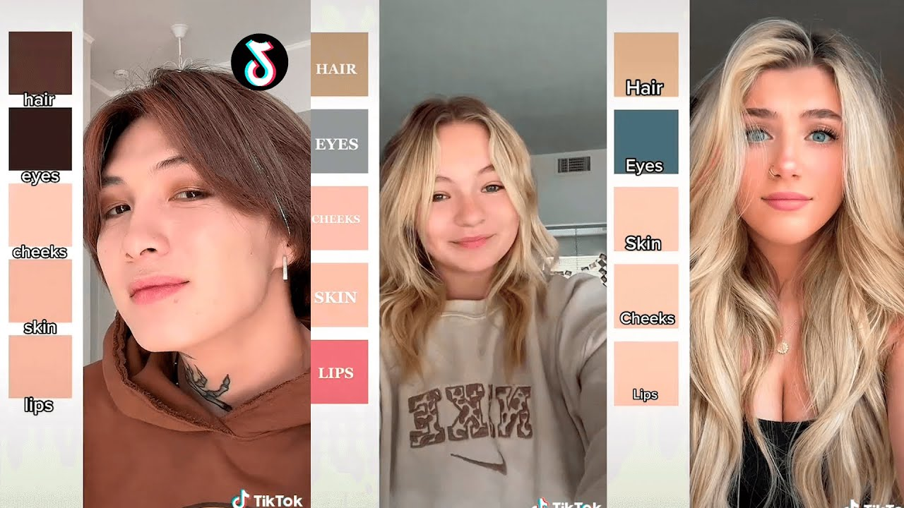
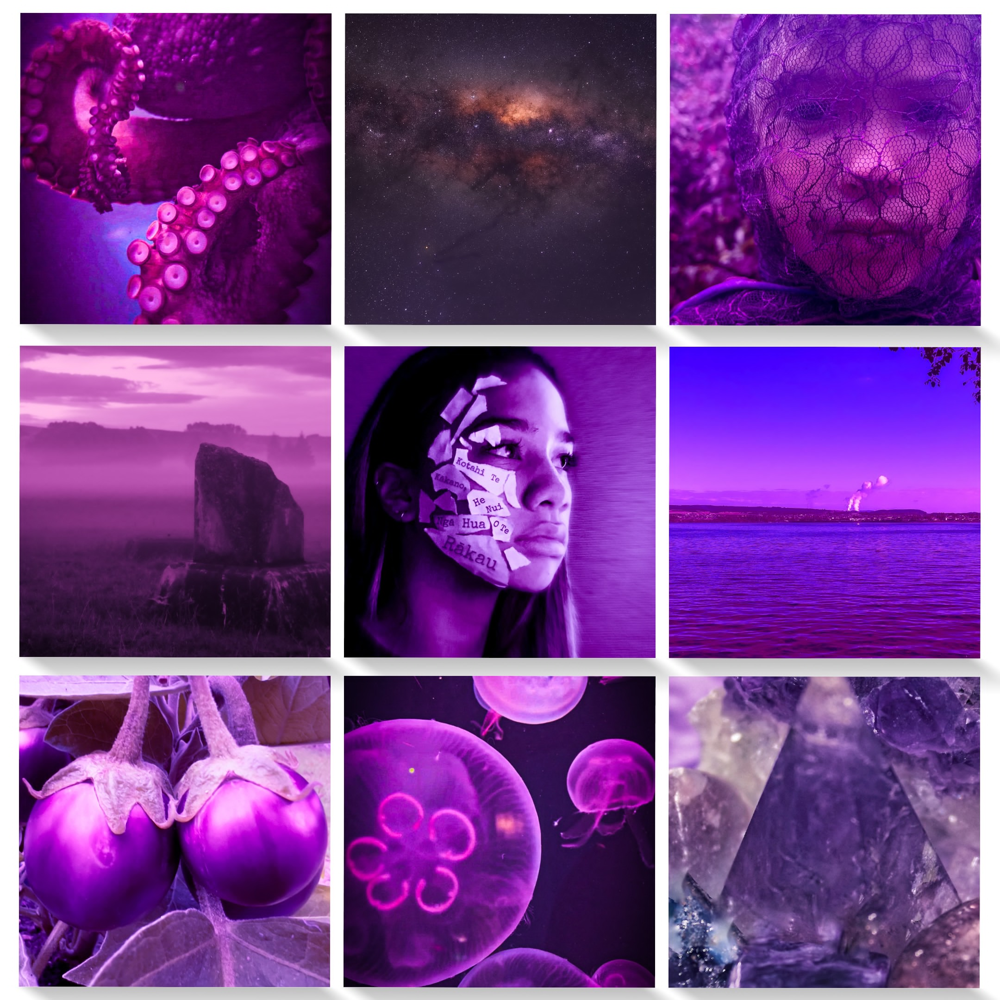
06
2M+ 搜索
- 「Color hunting challenge」在 TikTok 走红，玩家每日寻找一种指定颜色的物品并拍照分享，简单门槛 + 收集成就感 + 美学叙事三合一，UGC 参与门槛极低。
- 「每日一色」的轻量收集结构是高粘性日活机制的优秀样本——单次任务时长不超过 1 分钟，但持续参与可形成完整「色彩日记」，长期满足感强。
- 「视觉收集」是欧美玩家近年最受欢迎的休闲玩法之一，与「Pokémon GO 拍照模式」「Wordle 日字谜」属同一品类，对模拟经营 / 收集类游戏有直接借鉴价值。
🎭 角色设计
- 「色彩元素英雄」体系：以颜色为核心标识的英雄阵营设计——每位英雄主导一种颜色（红炎、蓝水、金阳、紫暗等），便于玩家快速识别角色属性，AI 出图验证「色彩系英雄阵容」的视觉协调性
- 「每日一色英雄推荐」NPC 设计：游戏内设置「色彩女神」NPC，每日推送「今日色彩」——玩家组建符合该色彩的阵容可获得加成，把现实趋势移植为游戏内日活机制
- 视觉关键词：明亮单色主导的角色形象 / 色彩对比强烈的武器 / 单色系特效（火焰红、水流蓝、闪电金）/ 色彩光晕背景 / 极简色块构图便于识别
⚔️ 玩法/活动
- 「每日一色」轻量日活机制：每天指定一种颜色，玩家组建符合该颜色的阵容上场即可领取奖励——任务时长 1 分钟、参与门槛极低，但持续登录形成「色彩收集日记」，是次日留存的优秀钩子
- 「色彩组合」战斗加成机制：玩家根据阵容颜色组合触发不同 Buff（如「五色齐全」获得彩虹增益、「单色阵容」获得专精强化）——简单规则但深度搭配空间大
- 「色彩收集」长期成就系统：累计完成 N 天的「每日一色」可解锁专属称号 / 限定皮肤——把日常打卡变成长期收集成就，激励玩家持续登录
- 「色彩主题副本」周更内容：每周一个色彩主题副本（如「红色周」「蓝色周」），整个副本视觉、敌人、奖励都围绕该色彩设计——主题化内容降低玩家审美疲劳
🎬 广告制作
- 「色彩对比」短视频钩子：黑白画面 → 一种鲜艳颜色快速涌现 → 英雄登场——前 1 秒制造强烈色彩冲击，是 TikTok 信息流广告的高停留率开场
- 「Today's color is」UGC 模板广告：模仿 TikTok 原生 UGC 格式（「今日色彩是金色」+ 玩家展示金色英雄阵容），低广告感、高真实感，是有机内容化广告的优秀模板
- 「彩虹阵容」收集广告：展示玩家逐步收集到完整 7 色英雄的成就时刻——「Collect them all」叙事是收集类游戏广告中较有代表性的情感钩子，明确传递核心玩法乐趣
角色 3/5玩法 4/5广告 4/5适配 3/5
B 结构借鉴
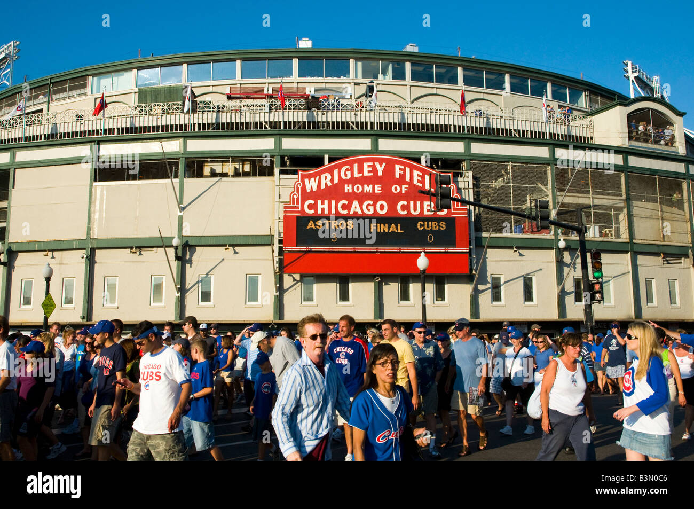
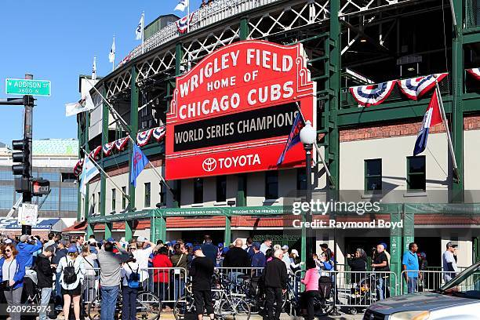
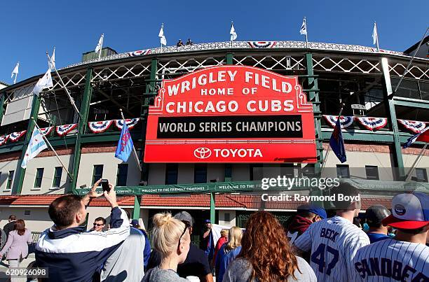
07
1M+ 搜索
- Cubs 主场赛事本周热搜，Wrigley Field（百年棒球场地标）的现场氛围、城市归属感叙事制造稳定搜索量，棒球作为美国「国民运动」具有深厚情感基础。
- Wrigley Field 是 1914 年建成的「活历史地标」——常春藤外野墙、复古计分板、独特的城市风光，是「百年传承」类场景设计较有代表性的现实参照。
- 「Go Cubs Go」球队应援文化体现欧美「城市部落主义」情感——为同一支球队呐喊几代人，是「家族 / 部族传承」叙事的现实情感支撑。
🎭 角色设计
- 「家族传承」英雄子类：祖父辈→父辈→当前英雄的三代传承叙事——同一家族不同世代的英雄变体可作为「传承皮肤」系列，配合赛季活动逐步解锁，强化情感深度
- 「城市守护者」英雄原型：以特定城邦为根的世袭英雄——一生只为这座城市而战，「家乡守护」叙事是欧美玩家最深层的情感钩子之一，与体育城市文化高度同源
- 视觉关键词：复古球衣纹样转化为披风 / 应援棒球棒武器化 / 球场常春藤元素融入护甲 / 复古配色（蓝白红）/ 百年场馆建筑风格转化为城邦地标
⚔️ 玩法/活动
- 「百年城邦」传承玩法：玩家的城邦在多个赛季持续传承，前几个赛季的成就 / 建筑会留存到后续赛季作为「历史遗产」，把「跨赛季传承」做成核心情感锚点，深度优于「赛季重置型」游戏
- 「主场氛围」战斗 Buff 机制：玩家在自家城邦的副本中获得「应援 Buff」——围观队友数量、过往胜利累积都会转化为加成，把「主场感」做成机制层面的真实激励
- 「球队应援」公会文化：公会可设计专属「应援口号 / 颜色 / 标志」，公会战时这些元素出现在战场氛围中，强化「为公会而战」的情感投入
- 「世代赛季」长线运营：每个赛季对应「球队的一年」，跨赛季积累构成「球队历史」，给老玩家提供「我陪它走过 N 年」的情感锚点
🎬 广告制作
- 「百年传承」长广告结构：展示同一城邦从初代到当代的发展史——「Three generations. One city.」叙事，对成熟玩家具有极强情感共鸣，适合长视频广告
- 「主场欢呼」氛围广告：英雄登场 → 主场观众欢呼声渐强 → 高能技能爆发——直接借用体育大片的「主场登场」情绪结构，对体育受众玩家吸引力极强
- 「Go Team Go」UGC 鼓励广告：模仿球队应援文化，鼓励玩家公会创作专属应援内容——降低广告感，提升社区参与度
角色 2/5玩法 3/5广告 3/5适配 2/5
C 观察储备
08
2M+ 搜索
- 「Uncomfortable life」TikTok 格式从 White Lotus 文化衍生而出，玩家用自嘲方式吐槽生活的「awkward 时刻」（社交尴尬、家庭聚会、办公室对话），高共鸣度形成爆发式传播。
- 「自嘲式幽默」是 Z 世代核心情感语言——「我承认我的人生很 uncomfortable」是建立真实感较有代表性的钩子，比「凡尔赛炫耀」更具传播力。
- 「反差结构」（uncomfortable 现实 vs 游戏中的理想自我）是模拟经营/角色养成类广告的天然金矿——前段建立共鸣，后段提供逃避出口，钩子结构清晰。
🎭 角色设计
- 「逆袭废柴」英雄子类：背景设定中是「失败者 / 被忽视的小角色」，但玩家培养后逐渐成长为传奇——「废柴变英雄」叙事是欧美玩家最具共鸣的角色弧光，可批量产出该原型角色
- 「真实感角色」差异化设计：角色不必都完美无瑕——设计「拘谨的法师」「社恐的战士」「失败过的国王」等「不完美英雄」，差异化于传统的「全能英雄」，对成熟玩家吸引力强
- 视觉关键词：略显疲惫的面部表情 / 不完美的着装细节（破损、补丁）/ 与场景对比的「格格不入」感 / 内敛而非张扬的姿态 / 内心独白式的角色镜头
⚔️ 玩法/活动
- 「失败者逆袭」赛季叙事：赛季主线围绕一个「人人都看不起」的英雄逐步证明自己——玩家通过培养该英雄完成「认证之旅」，最终在赛季结尾迎来高光时刻，强情感叙事弧
- 「日常 awkward 事件」轻度玩法：游戏内设置「英雄的 awkward 时刻」轻度叙事事件（社交失败、决策错误、被嘲笑），玩家选择回应方式，简短的角色互动深化情感联结
- 「成长可视化」深度系统：玩家可在角色档案中看到「这个英雄一开始是这样的（弱小、被忽视），现在变成了这样（强大、受尊敬）」——把养成成就视觉化，提升玩家成就感与情感投入
- 「真实人生模拟」剧情副本：英雄面对「现实化困境」的剧情副本（如「家族失业」「朋友背叛」「自我怀疑」），玩家通过决策影响英雄成长方向，比传统打怪副本情感深度高
🎬 广告制作
- 「Real life vs Game」反差钩子：前 3 秒展示玩家现实生活的 uncomfortable 时刻 → 切到游戏中玩家是国王/英雄的画面——「Real life is uncomfortable. In the game, I'm the boss.」是模拟经营广告较有代表性的情感模板
- 「自嘲式开场」UGC 风格广告：「Hi, I'm an awkward 30-year-old. But in this game, I rule a kingdom.」——模仿 TikTok 原生自嘲格式，低广告感、高真实感，对 Z 世代具有直接情感冲击
- 「成长蜕变」长广告结构：展示角色从弱小到强大的完整养成过程——「I was nothing. Now I'm everything.」叙事，对成长 / 养成型游戏有直接拉新效力
角色 4/5玩法 4/5广告 5/5适配 4/5
A 契合度高
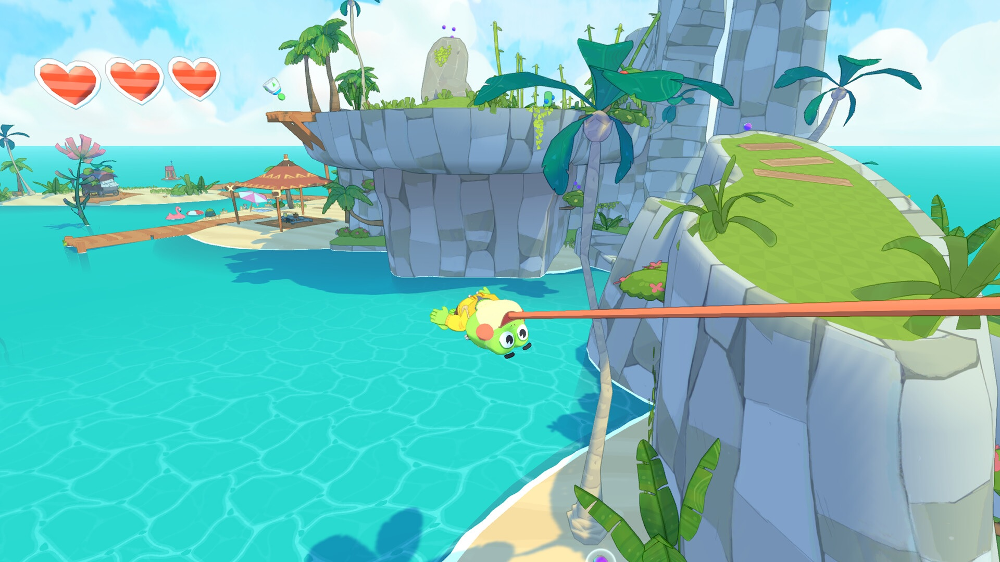
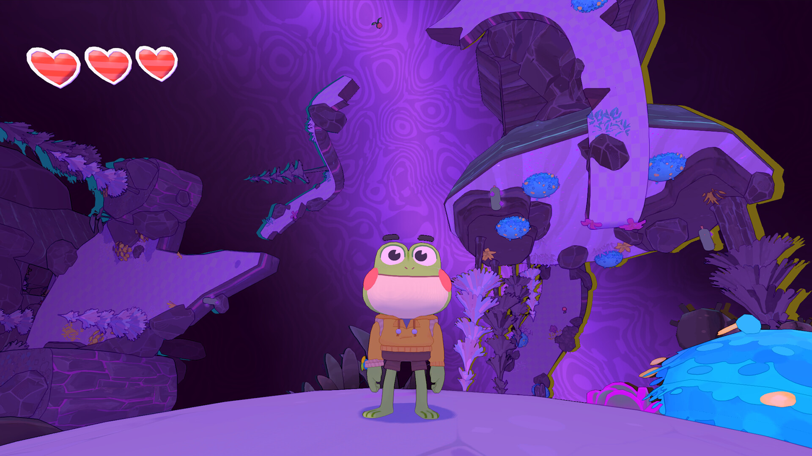
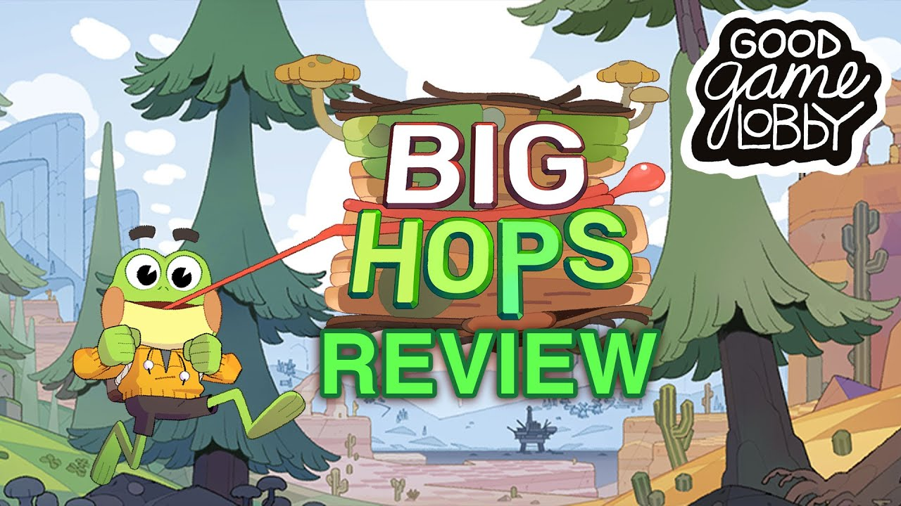
09
1M+ 搜索
- 独立游戏「Big Hops」本周热搜，3D 平台跳跃 + 可爱青蛙主角 + 简约美学的组合吸引大量休闲玩家关注，「cozy gaming」品类持续走强。
- 「萌系跳跃」核心玩法 + 「治愈系」整体氛围 = 当前休闲游戏品类的高人气配方，对休闲分支玩法（小游戏 / 限时副本）有直接灵感价值。
- 「青蛙跳跃」物理满足感是「ASMR 满足感」内容的优秀范例，跳跃动作的清脆音效 + 流畅动画是低门槛高传播的内容母题。
🎭 角色设计
- 「萌系吉祥物」NPC 子类：游戏中加入可爱萌宠（青蛙 / 兔子 / 小猫）作为玩家的「随身伙伴」NPC，可成长可装扮——情感陪伴类内容，对女性玩家和休闲玩家吸引力极强
- 「治愈系」隐藏角色：在严肃西幻卡牌中插入少数「治愈系」角色（如「森林精灵」「童话公主」），以可爱画风差异化呈现——制造「严肃中的温柔」反差，扩展玩家受众面
- 视觉关键词：圆润几何形体 / 大眼小嘴萌系比例 / 柔和马卡龙色系 / 简约几何场景 / 跳跃尘土粒子特效 / Q 版头身比
⚔️ 玩法/活动
- 「跳跃挑战」休闲分支副本：在主玩法之外加入「跳跃关卡」分支副本，操作简单 + 物理满足 + 限时奖励——为重度策略玩法提供「轻松调剂」选项，降低核心玩家疲劳感
- 「ASMR 满足感」迷你游戏：每日登录可玩的 30 秒「跳跃挑战」迷你游戏——简单清脆的物理反馈作为「日常治愈仪式」，是日活留存的轻量化钩子
- 「萌宠收集」养成系统：玩家可在游戏中收集 / 培养各种萌宠陪伴，作为「主玩法之外的情感陪伴」内容——参考宝可梦 / 暖暖类游戏的萌宠养成深度
- 「治愈系限时活动」节假日玩法：在重大节假日（圣诞 / 复活节 / 情人节）推出「治愈系」限时玩法，与日常硬核内容形成情绪节奏对比，扩展玩家活跃时段
🎬 广告制作
- 「ASMR 跳跃」满足感广告：超清音效 + 慢镜头跳跃 + 满足感落地——参考 Big Hops 的物理满足美学，制作休闲玩法的舒适型广告钩子，低门槛高传播
- 「萌宠陪伴」温情广告：玩家与萌宠的日常互动镜头集合 → 「Your best companion in the kingdom」slogan——情感型广告对女性玩家和休闲玩家直接吸引
- 「Cozy gaming」氛围广告：暖色调灯光 + 舒缓 BGM + 玩家舒适地玩游戏的画面——逆当前焦虑情绪下行的「治愈型广告」，差异化竞争力强
角色 3/5玩法 3/5广告 3/5适配 2/5
B 结构借鉴
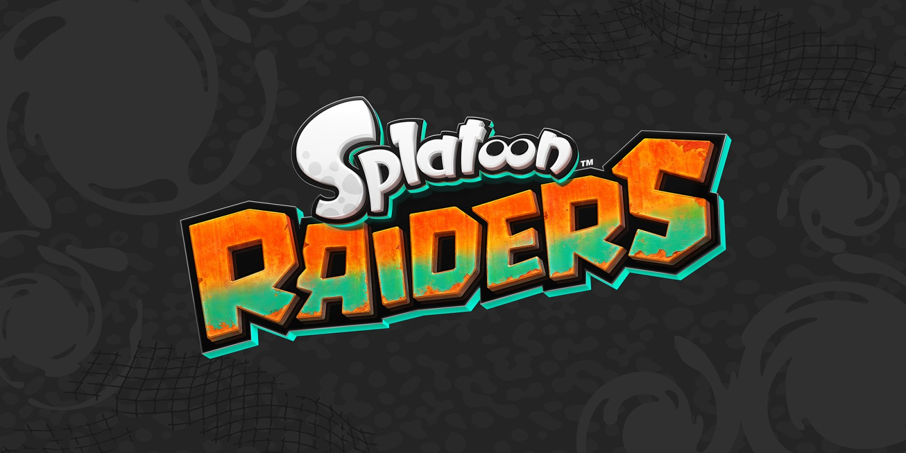
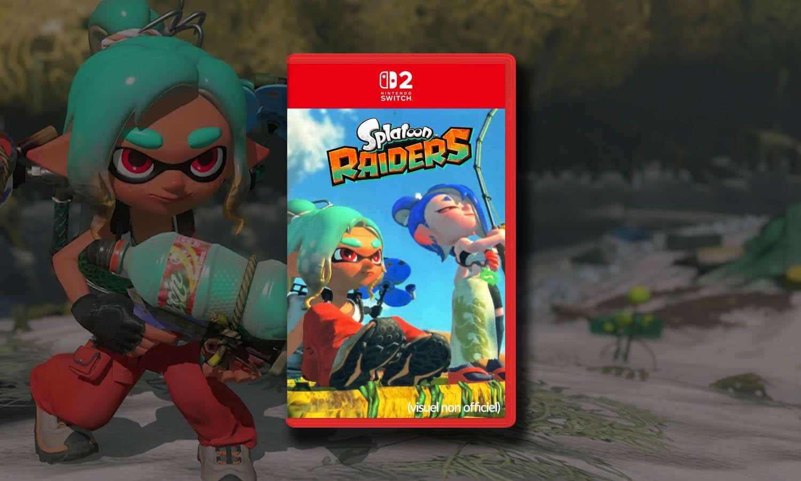
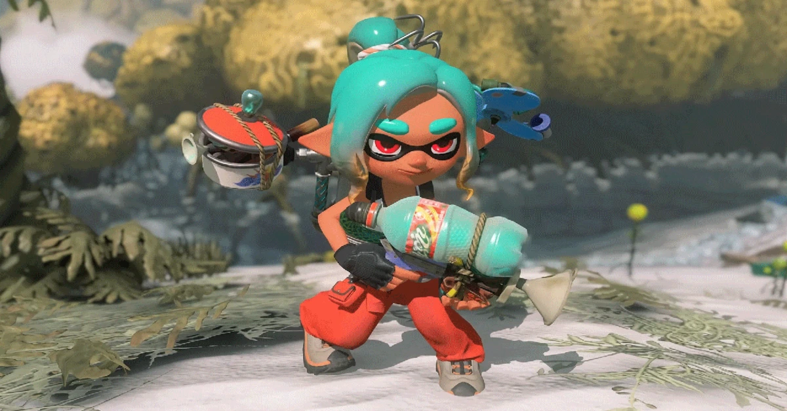
10
2M+ 搜索
- 任天堂正式官宣 Splatoon 系列新作「Raiders」，定档 7 月发售，作为 Switch 2 上市初期重磅作品，本周引发大量任天堂玩家社群讨论与 Switch 2 路线图分析。
- 「年轻反叛涂鸦战士」是 Splatoon IP 的核心角色原型——青年文化、街头亚文化、色彩涂鸦美学的融合，是欧美「青年阵营」角色设计的优秀样本。
- Nintendo 的「分层揭秘 + 倒计时悬念」官宣节奏是游戏营销的范本——预告 → 测试 → 上线 → 资料片，每个阶段都制造话题高峰，可作为游戏运营节奏的完整模板。
🎭 角色设计
- 「青年涂鸦战士」阵营原型：补足卡牌阵营中常见的「青年 / 亚文化」短板——街头服饰 + 涂鸦武器 + 鲜艳色彩 + 反叛态度，对年轻玩家直接吸引力极强，AI 出图验证「Z 世代专属阵营」的视觉表达
- 「色彩武器」差异化设计：武器不是金属冷兵器，而是「彩色油漆喷射器 / 涂鸦笔 / 色弹枪」——视觉差异化突出，与传统西幻冷兵器形成强对比，扩展卡牌的视觉多样性
- 「街头氛围」场景美术：城市街区背景 + 涂鸦墙壁 + 霓虹灯招牌——为西幻卡牌补足「现代化都市」场景类型，扩展世界观地图的视觉多样性
- 视觉关键词：荧光色系（霓虹粉、电光蓝、酸柠绿）/ 街头服饰元素 / 涂鸦笔刷质感 / 反叛姿态构图 / 「Z 世代」配色（粉紫、撞色拼接）
⚔️ 玩法/活动
- 「领地涂色」PvP 玩法：直接借鉴 Splatoon 核心玩法——双方比拼「占领区域」而非单纯击杀，把传统对战 PvP 转化为「策略涂色」型对抗，降低操作门槛同时提升策略深度
- 「色彩公会战」赛季活动：公会战不再只是战力比拼，而是「领地着色」——哪个公会成员在地图上「涂色」面积最大获胜——重新定义公会战目标，差异化竞争力强
- 「分层揭秘」官宣节奏复用：参考 Nintendo 的「预告 → 测试 → 上线 → 资料片」四阶段官宣节奏，应用于卡牌新英雄 / 新赛季官宣——每阶段制造话题峰值，最大化营销 ROI
- 「街头活动」赛季框架：以「街头嘉年华」为主题的赛季活动——涂鸦比赛、街头舞蹈、色彩派对，把现实青年文化整体平移为游戏赛季活动，对年轻玩家吸引力极强
🎬 广告制作
- 「色彩爆破」reveal 广告：黑白画面 → 鲜艳色彩从中心爆破扩散 → 角色登场——前 1 秒视觉冲击极强，是 TikTok 信息流广告的高停留率开场结构
- 「Pick your color」选边广告：展示不同颜色的角色组合，「Which color will you fight for?」slogan——色彩选择是低门槛的玩家身份选边，引发评论区互动
- 「分层路线图」官宣广告范式：把游戏内容更新做成「路线图视觉化」广告（已上线 / 即将上线 / 未来规划），让玩家对长期内容有清晰预期，提升玩家留存信心
角色 4/5玩法 4/5广告 4/5适配 3/5
B 结构借鉴
📢 广大大 GUANGDADA.NET · 多平台游戏广告情报
全球游戏 Top Ads · 人气值 Top1% · 当日热榜
来自广大大展示广告热榜，筛选条件：人气值 Top1%、品类限角色扮演/策略/益智/动作/模拟/冒险/射击/消除。Top1% 意味着全平台人气前 1% 的高效素材，参考价值极高。每条按游戏研发灵感 SOP 拆解，优先级：广告钩子 > 玩法留存 > 角色。
📅 数据日期 2026-04-23
🏆 筛选条件 人气值 Top1% · 当日热榜
🌐 平台覆盖 Google / AppLovin / UnityAds / YouTube / Kwai / IronSource
📢 展示数量 10 条精选
📊
关于数据来源
以上 10 条来自广大大展示广告热榜。条件：人气值 Top1%（全平台前 1% 高效素材）。本期渠道偏向 Google / UnityAds / Kwai / AppLovin / IronSource / YouTube，整体趋向欧美主流休闲爆款矩阵。指标说明：人气值 = 平台热度综合评分；展示估值 = 广告展示量预估；热度 = 近期投放活跃度。视频素材通过 CDP 从广大大详情页提取并下载本地，10/10 条含可播放视频。⚠️ 本期 #1 为博彩品类（Zynga Poker），分析仅作买量结构参考，不建议直接迁移。
本期热门广告 游戏研发结论
优先级：广告钩子 > 玩法留存 > 角色
广告制作方向
本期值得关注的信号：欧美主流休闲赛道全员 30s±10s 短钩子霸榜——10 条中 8 条落在 22~50s，印证「美区休闲买量 = 30s 节奏 + 单一爽点」的通用节奏。Cash Merge 2248 / Arrow Rush / 3D Bolt Master 三条均采用「假装失败 → 突然神操作」的反差钩子，前 3s 直接展示糟糕局面诱导玩家「我能做得更好」。Zynga Poker（合规风险，仅参考）则用真人桌局氛围放大社交诱惑，提示卡牌品类「真人 vs 真人」叙事在中重度品类的留量优势。Kwai 系 W2A 创作者素材（kwai.com / Welcome to tengine!）单条接近 1 分钟，证明 W2A 渠道偏好「真人陪玩讲解」长素材而非纯玩法切片。
玩法/留存方向
本期 6/10 条来自 合并 / 排序 / 拼图类极简爽点品类（Cash Merge、Nut Sort Relax、Arrow Rush、3D Bolt Master），核心机制都是「一步操作 → 即时变化 → 数字膨胀」的 30 秒满足回路。My Cooking Idle 把 Idle 经营的「自动产出 → 升级 → 解锁新店」做成无脑挂机循环，验证「闲置 + 解锁感」仍是欧美中年女性向的稳赚结构。超能戰爭 / Warzone Commander 走放置塔防 + 兵种 RPG路线，承接「卡牌玩家想要无脑战斗」的需求。这些为西幻卡牌「模拟经营辅助玩法」提供直接弹药：核心战斗外，加一个 1 分钟看得到数字增长的休闲循环。
角色设计方向
与 Vol.003 的 Arknights 高质量动画形成强烈对比，本期角色信号几乎为零——10 条中 9 条没有可识别的英雄角色，只用 UI 元素（数字球、箭头、坚果、螺丝）或真人玩家替代。这本身是个反向信号：欧美主流爆款的角色优先级在持续下沉，画面焦点已让位给「即时反馈的物体变化」。可借鉴的角色信号仅有 Zynga Poker 的真人玩家肖像（社交临场感）和 Welcome to tengine! 的二次元真人讲解 KOL 模板。对西幻卡牌的提示：在欧美休闲赛道竞争时，角色不宜作为唯一卖点，可以先建立 30 秒爽点再带角色出场——本期角色侧的 A 级条数为 0。
1
Top1%
人气 1640
1640
人气值
29s
创意时长
1天
投放天数
Top1%
排名
广告研发分析
- ⚠️ 合规警示：博彩品类，国内运营禁止，欧美亦受多平台政策限制；本卡仅作买量结构拆解，不建议直接迁移玩法/视觉到西幻卡牌
- 真人临场感钩子：开场 3s 即给真人玩家手牌特写 + 桌面筹码堆，制造「我也想坐下来玩一把」的社交诱惑
- Zynga 长青矩阵：十年老 IP 仍能跑出 Top1%，验证社交博彩品类的买量结构对增量人群仍有效——核心是社交而非赌博机制本身
🎭 角色设计
- 真人玩家肖像替代虚拟角色：广告中无任何虚拟英雄，全用真人 PvP 桌局画面——验证博彩/社交品类「角色 = 对手」的强临场感设计；西幻卡牌可逆向思考：当玩家在和「真人对手」对战时，是否还需要厚重的角色背景包装？
- 桌面筹码 / 牌面 / 表情成为「视觉角色」：当无明确人物时，物件本身承担情绪载体；这是低成本广告的兜底方案
⚔️ 玩法/活动
- 核心玩法 = 单局 5 分钟扑克：广告几乎不解释规则，只展示「下注 → 翻牌 → 赢取筹码」的瞬间满足；适配欧美玩家对扑克的高认知基础
- 对西幻卡牌核心战斗参考价值低：博彩机制不宜进核心系统，但「单局极短 + 多人围观」的局结构对卡牌副玩法有启发
🎬 广告制作
- ★ 真人 vs 真人社交临场感公式：开场即给「面对面真人对战」的桌局俯拍 + 玩家表情特写，让观众产生「我也能坐进去」的社交诱惑——这是中重度社交品类的强通用钩子；西幻卡牌「真人 PK 排位赛」类活动可借鉴此俯拍真人特写结构（替换为玩家头像 + 卡牌战场）
- 29s 紧凑节奏：开场 3s 钩子 → 中段 20s 局内高光（关键 All-in / 翻牌瞬间）→ 收尾 6s 品牌 logo + CTA；标准美区中重度休闲买量节奏
- 对我们的启示：剥离合规风险后，可借鉴「社交临场感 + 玩家表情特写」的开场钩子，西幻卡牌 PvP 排位活动广告可参考此结构
角色 2/5玩法 2/5广告 3/5适配 1/5
C 观察储备
2
Top1%
人气 1760
1760
人气值
30s
创意时长
1天
投放天数
Top1%
排名
广告研发分析
- Idle 自动产出 + 升级解锁：核心爽点是「数字自动膨胀 + 不断解锁新菜品/新店面」的双层正反馈
- 30s 完整循环展示：广告里跑了一个完整的「煎牛排 → 收钱 → 升级灶台 → 解锁新菜」小循环，让玩家秒懂玩法
- 女性向轻经营赛道：cozy 配色 + 慢节奏音效，主打中年女性碎片时间，CPI 低 ARPU 适中的稳赚结构
🎭 角色设计
- 食物即角色：广告中无明确人物，主角是不断升级变美的菜品本身——验证 cozy 经营品类「物体即情感载体」的设计思路；西幻卡牌「模拟经营辅助玩法」可借鉴：让升级中的建筑/产物本身有情感反馈，无需新增角色
- 缺失角色信号是隐性优势：避开「需要额外设计新角色」的内容成本，把美术资源压在产物美化上，性价比高
⚔️ 玩法/活动
- 「自动产出 → 收钱 → 升级 → 解锁」四段循环：典型 Idle 经营结构，完全匹配西幻卡牌想做的「主战斗外的模拟经营辅助玩法」；结构可以参考：英雄外出冒险（自动产出）→ 资源回流 → 升级城堡设施 → 解锁新功能
- 「闲置奖励」机制承接：玩家离线也能产出，回来时一次性领取——是延长会话间隔、保留长期玩家最稳的工具
🎬 广告制作
- ★ 美区轻经营完整循环展示公式 · 直接可借鉴：30s 跑完一整个升级循环（产出→收钱→升级→解锁新内容），让玩家在 30 秒里体验完成长感——西幻卡牌的「城堡建设」副玩法广告是个不错的参考起点：城堡 lv1 灰头土脸 → 投入资源 → 升级动画 → lv5 金碧辉煌
- 音效设计参考：每次「金币 +N」「升级完成」「解锁新菜」都有清脆音效反馈，是 cozy 类广告的「听觉爽点」标配；西幻卡牌可参考这套音效设计模式
角色 2/5玩法 4/5广告 4/5适配 4/5
A 契合度高
3
Top1%
人气 1579
1579
人气值
59s
创意时长
1天
投放天数
Top1%
排名
广告研发分析
- W2A 长素材结构：59s 接近 1 分钟，是 Kwai 平台 W2A（Web-to-App）渠道的典型长度——比 30s 钩子型素材给真人讲解留出更多展开空间
- 真人陪玩讲解模板：素材主体是创作者真人出镜 + 半屏游戏画面，类似中文区「带你玩」类陪伴感内容
- Kwai 渠道流量特征：偏向 LATAM / SEA 增量市场，与欧美主流投放节奏不同；与 Ads #8 Welcome to tengine! 同源 Kwai 渠道，可对比研究
🎭 角色设计
- 真人创作者 = 半个 NPC：素材中创作者本人扮演「带你玩的朋友」，比虚拟代言人更有信任感；这是 W2A 渠道独有的角色策略——西幻卡牌出海 LATAM 时可考虑签当地 KOL 拍真人陪玩素材
- 屏幕分割结构：上半屏真人 + 下半屏游戏画面，让真人表情和游戏画面同步展现——情感反馈与玩法验证同时完成
⚔️ 玩法/活动
- 无具体游戏玩法卖点：素材本身是平台/CPS 渠道导流，玩法承载弱；本卡的玩法可借鉴价值低，主要看「渠道+素材形态」组合
- 对西幻卡牌玩法不可借鉴：素材没有完整的玩法循环展示，主要靠创作者讲述吸引点击
🎬 广告制作
- ★ Kwai W2A 长素材模板：59s 长度 + 真人陪玩 + 屏幕分割，是 Kwai 渠道的标配公式；西幻卡牌如要在 Kwai/LATAM 投放，值得考虑放弃欧美 30s 短钩子思维，按此长素材模板重制
- 与 Ads #8 Welcome to tengine! 形成 Kwai 渠道双信号：本期同渠道有 2 条入榜，证明 Kwai W2A 当前流量充沛但素材形态相对固化
角色 2/5玩法 1/5广告 3/5适配 2/5
C 观察储备
4
Top1%
人气 975
975
人气值
45s
创意时长
1天
投放天数
Top1%
排名
广告研发分析
- 「假装失败 → 突然神操作」反差钩子：开场 3s 故意展示「玩家明明可以合并却没操作」，激起观众「我能做得更好」的代入
- 2048 数字膨胀爽点：核心是数字方块合并 → 翻倍 → 视觉膨胀，配合 Cash 主题强化「赢钱」错觉（本身不是真现金）
- 与 Ads #6/#9/#10 同结构：本期 4 条「极简爽点 + 反差钩子」类广告共振，印证 30s 节奏的通用节奏
🎭 角色设计
- 无角色，主角是数字方块：典型超休闲设计，让数字本身成为视觉焦点；西幻卡牌不可直接借鉴角色侧
- 「Cash」字样的视觉强化：方块上的金币/钞票符号承担情感载体，是 incentive ads 类广告的视觉打法
⚔️ 玩法/活动
- 2048 合并 + 现金主题：经典玩法套个新主题就能跑出 Top1%，验证合并品类「机制成熟 + 主题换皮」仍是当前美区低 CPI 主力打法；西幻卡牌「魂石合并」「装备合并」副玩法可借鉴此演出方式
- 「数字翻倍」即时反馈：每次合并都有数字 +1 倍 + 粒子特效 + 音效三重反馈——是合并品类玩法的核心可移植资产
🎬 广告制作
- ★ 假装失败钩子 + 数字膨胀公式 · 适合改造迁移：前 3s 故意展示「玩家失误」激起观众优越感，中段 30s 演示数字膨胀爽点，收尾 12s 加 CTA；西幻卡牌「合成觉醒」类副玩法广告可参考此结构（卡牌叠到 LV80 时数字爆涨 + 金光特效）
- 与 Ads #9/#10 形成本期「反差钩子三连」：建议作为西幻卡牌「合成/觉醒」类副系统广告的标准开场公式入库
角色 1/5玩法 3/5广告 4/5适配 3/5
B 结构借鉴
5
Top1%
人气 1307
1307
人气值
22s
创意时长
1天
投放天数
Top1%
排名
广告研发分析
- 22s 短钩子放置塔防：本期最短素材之一，验证「放置塔防 + 22s 极短」组合在 YouTube 渠道的高效率
- 兵种 RPG 元素：素材展示「不同兵种 → 升级解锁 → 抵御更强敌人」的小循环，承接卡牌玩家想要无脑战斗的需求
- 与 Ads #7 超能戰爭 同赛道：本期同时有 2 条「放置策略」入榜，证明该赛道当前买量稳定
🎭 角色设计
- 兵种 = 简化卡牌角色：每个兵种都是简笔/Q版形象，但承担明确职能（坦克/输出/治疗）；西幻卡牌可借鉴「角色简化 + 职能清晰」的 UI 呈现，让玩家在 5 秒内看懂阵容搭配
- 无主角/无叙事，只有兵种矩阵展示——典型放置策略品类的角色设计取舍
⚔️ 玩法/活动
- 放置塔防 + 兵种解锁循环：核心是「布兵 → 自动战斗 → 收资源 → 解锁新兵种」的离线友好循环，与西幻卡牌主战斗模式高度兼容；可作为「日常远征/挂机收益」类副玩法的广告化模板
- 「红色警报」紧迫感：广告中段插入「敌方援军赶到」的红色提示，制造短暂紧张感再让玩家爽快应对——节奏控制可借鉴
🎬 广告制作
- ★ 22s 极短放置塔防公式：开场 3s 战场全景钩子 → 中段 12s 兵种解锁 + 战斗演出 → 收尾 7s CTA；西幻卡牌「日常远征」类副玩法的短素材可参考此节奏
- 「红色警报」中段紧张感设计：22s 内插入一次危机 → 化解爽快感，避免短素材纯爽点的疲劳——是短素材防完播率衰减的实用技巧
角色 2/5玩法 3/5广告 4/5适配 3/5
B 结构借鉴
6
Top1%
人气 975
975
人气值
24s
创意时长
1天
投放天数
Top1%
排名
广告研发分析
- 排序解压赛道：与「水排序 / 颜色排序」同类，核心是「混乱→有序」的视觉满足
- 「假装失败」钩子复用：与 Ads #4/#9/#10 同款反差结构——开场故意操作错误激起观众纠正欲
- 低成本超休闲爆款：单一机制 + 24s 短素材，CPI 极低适合大规模铺量
🎭 角色设计
- 无角色，螺丝/坚果即视觉主角：与西幻卡牌角色侧无关联
- 颜色心理学应用：暖色调 + 圆润形状降低视觉防御，让画面本身成为情感载体
⚔️ 玩法/活动
- 「混乱→有序」解压机制：排序类玩法的核心爽点是「让杂乱归位」，调用人脑天然的强迫症倾向；西幻卡牌可借鉴：背包整理、阵容自动布阵、装备分类等 QoL 功能可包装成「解压小游戏」
- 对西幻卡牌核心战斗不可借鉴，但 QoL 副玩法有迁移价值
🎬 广告制作
- ★ 24s 极短排序解压公式：开场 3s 故意失误 → 12s 完美排序演示 → 9s CTA；与 Ads #4/#9/#10 形成「假装失败」钩子四连，证明此公式当前美区超休闲投放的硬通货地位
- 音效极致简化：每次螺丝归位「咔哒」一声，是低成本爽点反馈的极致——西幻卡牌任何「物品归位」类操作都可借鉴此音效模式
角色 1/5玩法 2/5广告 3/5适配 2/5
C 观察储备
7
Top1%
人气 1919
1919
人气值
40s
创意时长
1天
投放天数
Top1%
排名
广告研发分析
- 本期人气最高 (1919)：但繁体中文素材，主投港澳台/东南亚华人市场，欧美主流不直接竞争
- 放置策略 + 兵种 RPG：与 Ads #5 Warzone Commander 同赛道，验证此结构跨语言市场通吃
- 40s 中等长度：比超休闲 22s 长，比 Whiteout 1m40s 短，是放置策略品类常见的素材长度
🎭 角色设计
- 「超能英雄」角色矩阵展示：素材中段快速切换 4-5 个兵种英雄，每个有明确技能高光——比 Ads #5 的简笔兵种更接近卡牌品类的角色设计标准；西幻卡牌可借鉴「40s 内展示 4-5 英雄技能高光」的剪辑节奏
- 色彩饱和度高 + 卡通渲染风格：典型华语区放置策略美术，与欧美「写实卡通」（如 RAID）有明显差异
⚔️ 玩法/活动
- 放置策略 + 兵种解锁：与 Ads #5 同结构，验证此玩法跨市场有效；可与 Ads #5 共同作为西幻卡牌「日常远征/兵种成长」副玩法的设计参考
- 中文素材的玩法演示节奏比英文素材更密集（同样 40s 塞入更多内容），是华语区买量的常见取舍
🎬 广告制作
- ★ 华语放置策略买量样本 · 适合作为反向对比：与欧美 30s 短钩子相比，本卡 40s + 高密度信息塞入，是华语区与欧美区买量节奏差异的典型样本——西幻卡牌如要分区域投放，需要按市场重剪不同节奏的素材
- 对西幻卡牌（欧美主战场）的直接迁移价值低，但作为「区域差异化」案例值得入库
角色 3/5玩法 3/5广告 3/5适配 2/5
C 观察储备
8
Top1%
人气 1579
1579
人气值
50s
创意时长
1天
投放天数
Top1%
排名
广告研发分析
- Kwai W2A 渠道双信号：与 Ads #3 kwai.com 同源同期入榜，证明 Kwai 当前流量稳定但素材形态固化
- 50s 真人 KOL 长素材：与 Ads #3 共用模板，长度比 Ads #3 短 9s 但结构相同
- 「tengine」可能是平台/工具品牌：通过创作者素材包装为游戏入口，本质是 CPS/导流
🎭 角色设计
- 真人 KOL = 主角：与 Ads #3 同款屏幕分割结构，真人创作者出镜陪玩讲解；适合 LATAM/SEA 区域投放参考
- 对欧美主流投放借鉴价值低；对西幻卡牌出海多区域有参考价值
⚔️ 玩法/活动
- 无具体玩法卖点：导流型素材，玩法承载弱；与 Ads #3 同样不可借鉴玩法设计
- 唯一可学的是「素材中创作者反复说一句口号」的洗脑式设计
🎬 广告制作
- ★ Kwai 双信号验证 W2A 长素材模板：50-60s + 真人讲解 + 屏幕分割是 Kwai 渠道当前最稳定的素材形态；西幻卡牌如规划 Kwai 渠道，建议按此模板重制（不宜照搬欧美 30s 短钩子素材）
- 与 Ads #3 形成本期 Kwai 渠道双信号，建议入库作为「Kwai 渠道素材模板」案例
角色 2/5玩法 1/5广告 3/5适配 2/5
C 观察储备
9
Top1%
人气 975
975
人气值
30s
创意时长
1天
投放天数
Top1%
排名
广告研发分析
- 「Solve & Earn」激励叙事：标题直接承诺「解题 + 赚钱」，是当前美区 incentive ads 的经典文案
- 30s 箭头解谜：与 Ads #4/#6/#10 同结构反差钩子——开场故意展示错误箭头方向，激起观众纠正欲
- 逻辑解谜赛道：箭头/方向类逻辑题对欧美玩家有天然吸引力，CPI 低规模化容易
🎭 角色设计
- 无角色，箭头本身即视觉主角：典型超休闲设计取舍
- 数字奖励 / 金币图标承担情感载体（强化 Earn 主题）
⚔️ 玩法/活动
- 逻辑解谜 + 即时正反馈：每解出一题立刻给金币 + 数字增长 + 音效——「解题→奖励」即时绑定的设计是当前 incentive 类广告的硬通货
- 对西幻卡牌「策略战斗」可借鉴：每一步操作都给即时数字反馈（伤害飘字 + 暴击高光 + 连击数字累计），让 30s 内的策略决策变成连续小奖励
🎬 广告制作
- ★ 反差钩子四连之一 · 30s 标准美区超休闲公式：与 Ads #4/#6/#10 共同验证「假装失败 → 神操作」开场公式当前美区超休闲投放的硬通货地位；建议作为西幻卡牌「策略觉醒/连击爽点」类副玩法广告的标准开场入库
- 「Solve & Earn」CTA 直白：直接承诺「解题就能赚」，与挑战式 CTA（「你能想到吗」）同源；适合超休闲品类，西幻卡牌中重度品类不直接借鉴，但「日常解谜赢资源」副活动可参考
角色 1/5玩法 3/5广告 4/5适配 3/5
B 结构借鉴
10
Top1%
人气 1579
1579
人气值
29s
创意时长
1天
投放天数
Top1%
排名
广告研发分析
- 3D 螺丝拧紧赛道：与 Nut Sort 同源解压赛道，但用 3D 拼装而非纯 2D 排序，视觉差异化
- 反差钩子四连最后一员：与 Ads #4/#6/#9 共用「假装失败」开场公式
- AppLovin 渠道：是 3D 解压类广告主战场之一，单条 29s 适合该渠道
🎭 角色设计
- 无角色，螺丝/工具即主角：但 3D 渲染 + 拟物化质感比 Nut Sort 更精致，画面成本明显更高
- 「拟物化工具」承担互动焦点：扳手 / 螺丝刀 / 螺丝的 3D 模型本身即是广告卖点
⚔️ 玩法/活动
- 3D 拼装/解压机制：把现实生活中的「拧螺丝」变成游戏化的解压循环；与 Nut Sort Relax 同源但视觉升级
- 对西幻卡牌不可借鉴核心战斗，但「装备拼装/锻造」类副玩法可借鉴 3D 拼装的视觉演出（部件 → 拼装 → 完成炫耀）
🎬 广告制作
- ★ 反差钩子四连收官 · 3D 升级版本：与 Ads #4/#6/#9 共同形成「30s + 假装失败 + 即时反差爽点」的标准美区超休闲公式；本卡的 3D 视觉差异化是该公式的成本升级版本，证明「同一公式 + 视觉升级」可继续跑出 Top1%
- 对西幻卡牌「锻造/觉醒」类副玩法广告的直接启示：可在「材料合成 → 装备成型」这种过程上加 3D 演出，单条素材成本可控且能差异化
角色 2/5玩法 3/5广告 4/5适配 3/5
B 结构借鉴